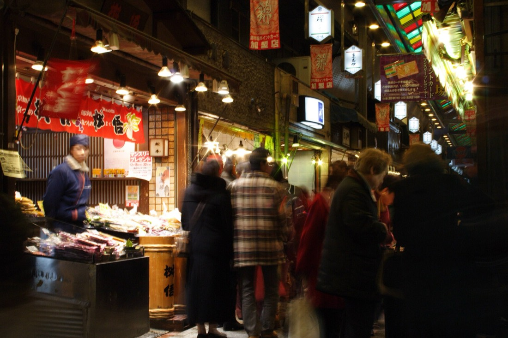
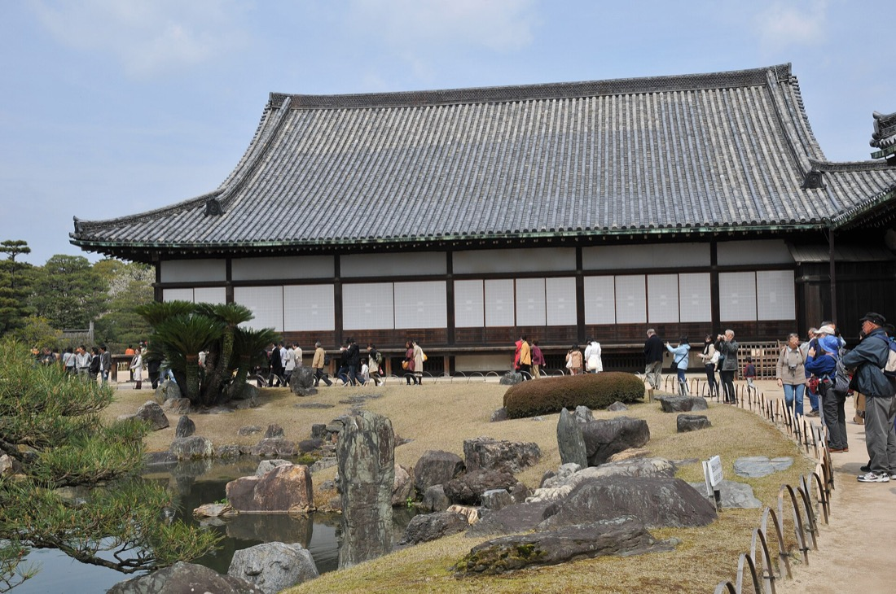
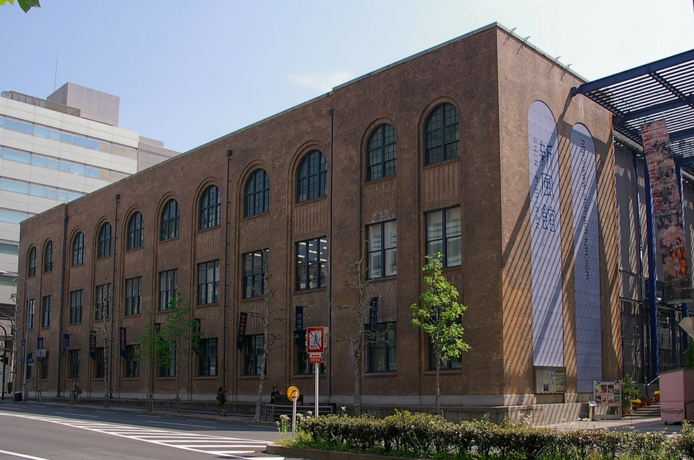
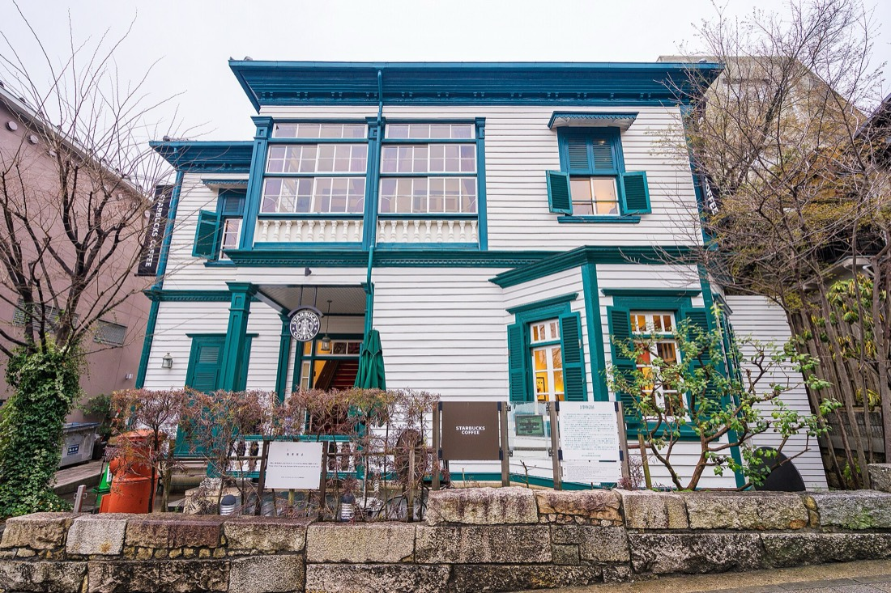
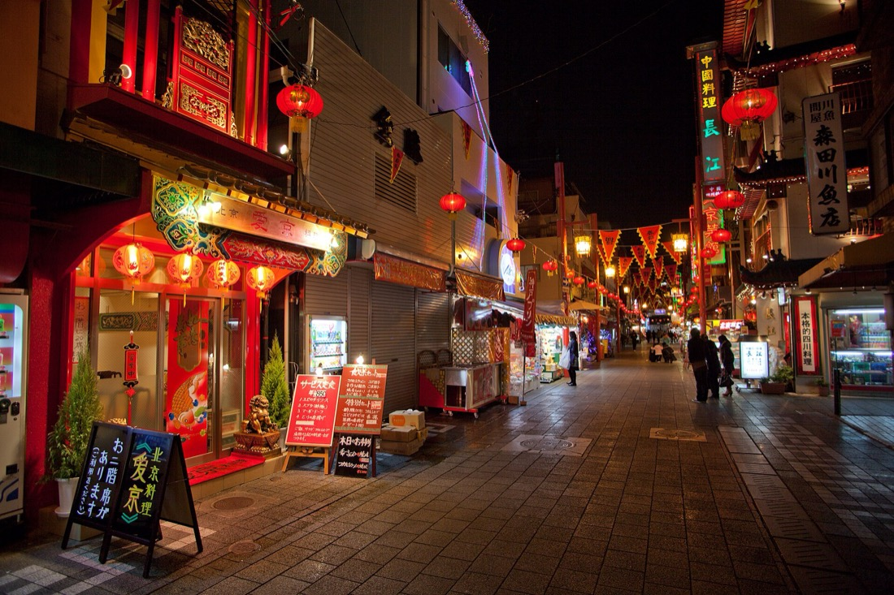
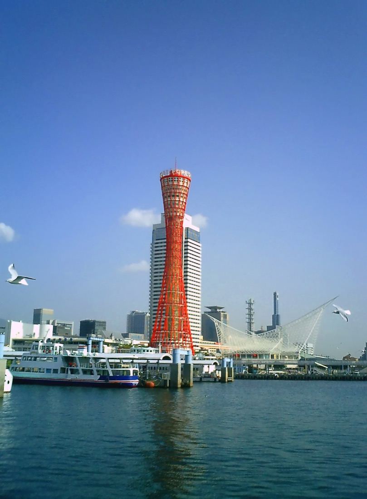
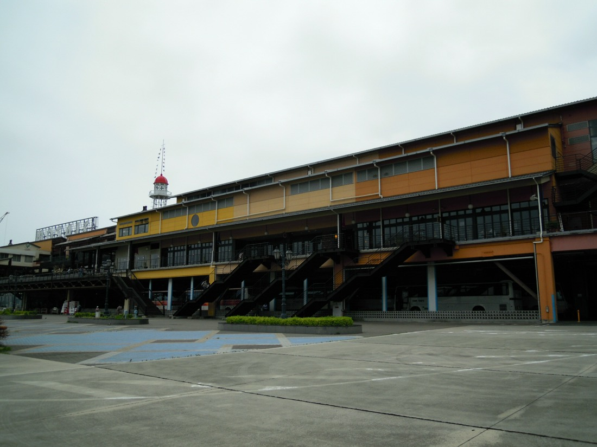
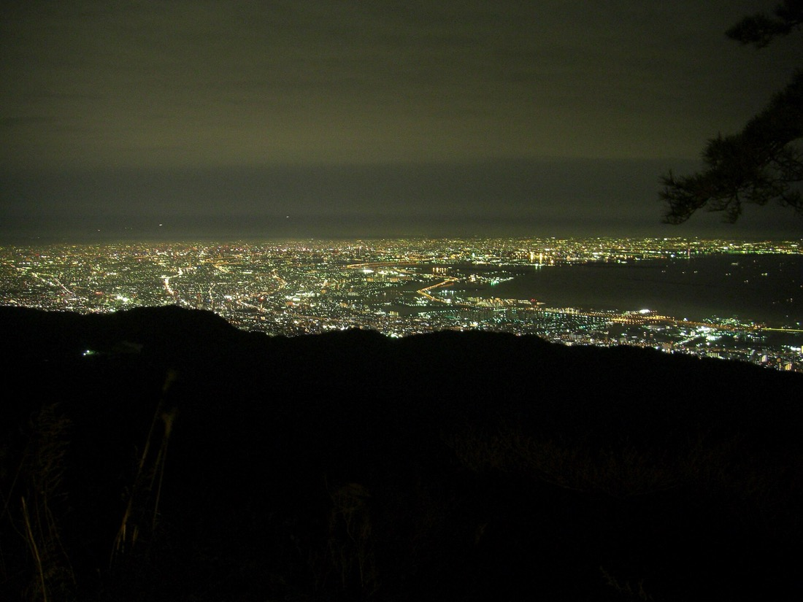
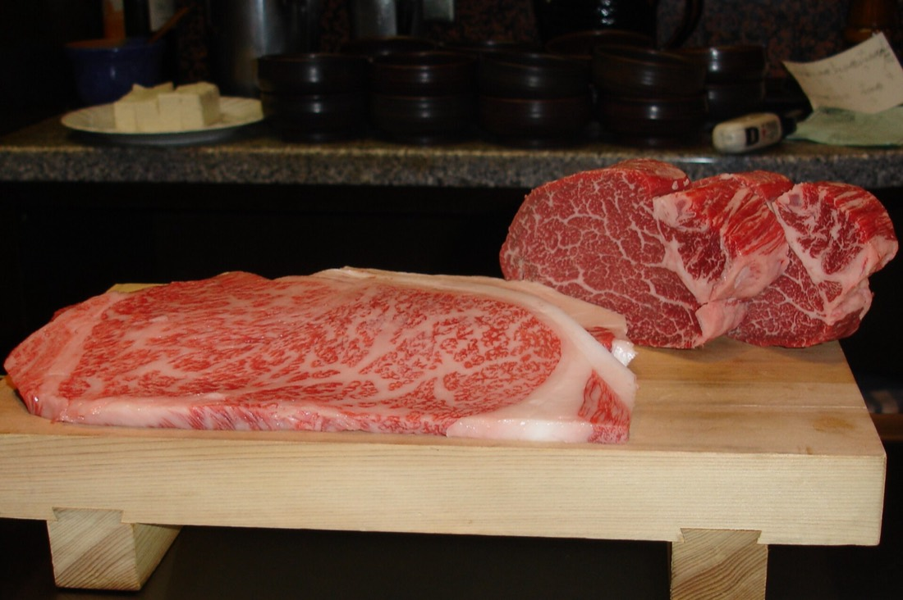

2026-12 京都 + 关西 · 和妈妈两个人
建站：2026-10-29 · 更新：2026-10-29 · 第三版（京都收紧一天、奈良 + 神户都排进去、补上银阁寺和二条城、岚山降成半天、加了上海中转和大兴的查证）
当前状态：什么都还没订，但妈妈的日本签证已经有了。这一版把日期、机场、酒店积分价、7 天骨架、周边城市的取舍和吃的清单都排了出来，等你拍日期和城市取舍，再去订机票和酒店。页面上所有价格、班次、营业时间都是 2026-10-29 的查询快照。
要点
- 人：2 位大人（你 + 妈妈），从北京出发往返。
- 机场结论：往返都是「北京首都 PEK ⇄ 关西 KIX」，两头都不换机场——不是大兴，大兴飞关西的直飞已经停了。去程最好的一班是国航 CA927 首都 T3 08:40 → 关西 T1 12:40，当天下午就能进京都城；回程 CA928 关西 T1 13:50 → 首都 T3 16:15。细节见第 2 节。
- 日期建议：12/5（六）→ 12/11（五），7 天 6 晚。理由是夜枫点灯和红叶这两件事在这一周正好交错，见1.1——往后挪会完全错过点灯，往前挪红叶可能还没到。
- 住：京都 4 晚（12/5–12/9）+ 大阪难波 2 晚（12/9–12/11），整趟只搬一次家。多出来的那晚大阪是为了神户——从难波去三宫 40 分钟直通，从京都去要 52 分钟还得换车。积分房按 12/5–12/11 实查过，万豪体系里京都性价比最高的积分房是宝池王子（¥1.67/点）和丽思卡尔顿（¥1.38/点），普通档的 Moxy / Courtyard 用积分反而不划算，见第 3 节。
- 行程这一版改了什么（按你的反馈）：① 京都收紧——原来东山和伏见分两天、岚山和城北又分两天，现在各压成一天（就是你记得的那种密度：清水寺 + 二三年坂 + 祇园 + 伏见稻荷 + 鸭川一天走完）；② 奈良和神户都去，神户放在住大阪的那天，往返只 40 分钟；③ 补上银阁寺 + 哲学之道 + 二条城——银阁寺和清水寺、伏见稻荷、金阁寺是同一档，上一版漏了；④ 岚山降成半天，砍掉嵯峨野小火车，理由见 8.1。
- 要你定的：日期、酒店走积分还是现金、要不要再加一天变 8 天（7 天版已经装得下奈良 + 神户，但京都从 4 个整天压到 3 个）。见第 0 节。签证不用操心了——妈妈已经有。
- 还缺：餐厅的 Google 评分和评价数还没逐家拉（食べログ 挡了自动访问），所以第 6 节现在是「选项清单」不是「排好序的榜」；下一轮补。
0. 现在要定的三件事
这三件事互相咬着，定完就能开始订票。其余的（餐厅、细排、门票）都可以慢慢迭代。原来那版里「神户去不去」已经不用问了——你说奈良和神户都去，已经排进去了（见 D6）；签证也不是问题了。
| # | 要定什么 | 我的建议 | 为什么现在就要定 |
|---|---|---|---|
| 1 | 具体哪 7 天 | 12/5（六）→ 12/11（五）。备选见 1.1 的四个方案。 | 机票越早越便宜，而且 12 月上旬是日本国内的红叶尾声 + 年末，京都热门酒店的积分房会先空再贵。 |
| 2 | 要不要加一天变 8 天 | 能请就加（12/5–12/12）。加了之后岚山和城北可以拆回两天、嵯峨野小火车也坐得上，大阪从「两个晚上」变成「一个整天」。不加也完全成立，就是 D2 和 D3 两天会很密。 | 这是唯一还会影响订几晚房、买哪天机票的事。你说日期可以正负 2–3 天，12/12 完全在范围内。 |
| 3 | 积分还是现金 | 京都用现金住 Moxy / Courtyard（每晚不到 ¥20K），把积分留给丽思卡尔顿或宝池王子住 1–2 晚当「体验日」。 | 查下来普通档位用积分只能换到 ¥0.4–0.7/点，远低于万豪积分 ¥1.0/点的合理线；换高档房才回本。 |
| ✓ | 已定：去。放在 12/10（住大阪那天），从难波阪神直通 40 分钟到三宫，不占京都的天数。奈良也去，12/8 一整天。 | 这件事定了之后，7 天的排法只剩一种（见 第 5 节的排法 ①），京都那三天就得按现在这个密度走。 | |
| ✓ | 已确认：妈妈已经有签证，这一项不用做了。 | 原来这是唯一可能卡住行程的事。现在整趟没有任何需要排队等审批的环节，剩下的全是订票和排路线，节奏完全由你定。护照有效期还是顺手看一眼（入境日之后要剩 6 个月以上）。 |
1. 旅程总览
1.1 日期：四个方案，和它们各自赌什么
你给的窗口是 12/6–12/13 这一周、正负 2–3 天。12 月上旬的京都刚好卡在两件事的交界上，所以挪几天差别不小：
两个互相拉扯的事实（都来自 2026-10-29 的查询）
- 红叶见顶：日本气象协会预测京都约在 12/11 前后——这比一般年份晚。而中文攻略普遍写「11/18–12/5」。两种口径差了一到两周，所以 12 月上旬这一周两头都沾得到，但谁也不敢保证哪天最好。出发前两周看 tenki.jp 的红叶前线再微调。
- 夜枫点灯基本在 12/6 前结束：永观堂（禅林寺）的点灯是 11/20–12/6（¥1,000，不能提前买票，现场排队）；清水寺的夜间特别参拜 11/21–11/30，已经结束；将军塚青龙殿的夜间特别参拜写到「10 月下旬–12 月上旬」。
结论：想看夜枫点灯，第一晚必须在 12/6 当天或之前落地。
| 方案 | 日期 | 天数 | 好处 | 代价 |
|---|---|---|---|---|
| A 推荐 | 12/5 六 → 12/11 五 | 7 天 6 晚 | 12/5 傍晚落地还赶得上永观堂点灯的倒数第二晚，12/6 是最后一晚，两次机会；之后 12/7–12/11 全是工作日，清水寺、岚山的人比周末少一大截；按气象协会口径红叶正在往见顶走。 | 第一天要在落地当天晚上还出门，有点赶（但永观堂在南禅寺旁边，离市区很近）。 |
| B | 12/6 日 → 12/12 六 | 7 天 6 晚 | 完全落在你原本给的窗口里；红叶按气象协会口径更靠近见顶。 | 点灯只剩 12/6 一晚，而且是落地当天，错过就没有了；最后一天周六回程，关西机场人多。 |
| C | 12/3 四 → 12/9 三 | 7 天 6 晚 | 点灯有 4 个晚上（12/3–12/6）可挑；按中文攻略的口径红叶更保险；整趟几乎全是工作日。 | 如果气象协会的 12/11 是对的，红叶还没到最好；且已经跑到你窗口外 3 天。 |
| D | 12/8 二 → 12/14 一 | 7 天 6 晚 | 如果气象协会的 12/11 准，红叶见顶就压在中间，是四个方案里红叶最好的。 | 点灯全错过；12 月中旬开始各家进圣诞/年末档，京都酒店价格上一个台阶。 |
注：12/6 和 12/13 都是周日。方案 A 的「周六出发」对你和妈妈请假都友好；回程 12/11 周五下午到北京，周末还能缓一天。
1.2 7 天骨架（按方案 A 排）
基地放京都 4 晚、大阪 2 晚，整趟只搬一次家。京都那三个整天按你说的收紧了——原来东山和伏见分两天、岚山和城北又分两天，现在各压成一天；省下来的两天给了奈良和神户。神户故意放在搬到大阪之后，因为难波到三宫 40 分钟直通，京都到三宫要 52 分钟还得换车。
| 日期 | 城市 / 区域 | 当天会去 / 做什么 | 天气 / 穿搭 | 晚上住哪里 |
|---|---|---|---|---|
| 12/5 周六 | 飞行 → 京都 | 国航 CA927 北京首都 T3 08:40 → 关西 T1 12:40 → HARUKA 到京都约 15:00 → 放行李 → 傍晚南禅寺 + 永观堂夜枫点灯（12/6 结束）。 | ✈️ 机舱冷 · 落地 10°C 上下 | 京都 4 晚（12/5–12/9） 待定见第 3 节 |
| 12/6 周日 | 京都 · 东山 + 伏见 最密的一天 |
就是你上次那一天，加一个东福寺。清水寺 6:00 开门就去 → 三年坂二年坂 → 高台寺 → 八坂神社 → 折回二年坂逛店 → 祇园午饭 → 建仁寺 → 东福寺通天桥 → 伏见稻荷（15:40 进，看黄昏 + 打灯） → 鸭川 → 先斗町晚饭 → 永观堂点灯最后一晚（加时赛）。 | ☀️ 4–11°C · 走 11–12 公里，鞋最重要 | |
| 12/7 周一 | 京都 · 西 + 西北 两天压一天 |
岚山上午：天龙寺（8:30 开门就进）→ 竹林（20 分钟过场）→ 常寂光寺 / 祇王寺 → 渡月桥 → 午饭。下午嵐電横穿到城北：龙安寺石庭 → 金阁寺 → 今宫神社烤饼。砍掉嵯峨野小火车（省近两小时）。 | ⛅ 3–11°C · 岚山比市区冷 1–2°C | |
| 12/8 周二 | 奈良 | 近铁特急 35 分钟到奈良 → 兴福寺 → 奈良公园喂鹿 → 奈良町午饭 → 东大寺大佛殿 → 二月堂看夕阳 → 春日大社石灯笼 → 傍晚回京都。平路，连走两天之后的缓冲日。 | ☀️ 3–11°C · 公园里风大 | |
| 12/9 周三 | 京都收尾 → 大阪 | 补上前三天漏掉的：银阁寺 → 哲学之道（2 公里平路）→ 南禅寺白天 → 锦市场午饭 → 二条城（入城截止 16:00）→ 新风馆 / 三条通买东西 → 傍晚带行李去大阪难波 → 道顿堀 / 法善寺横丁晚饭。 | ⛅ 4–12°C · 大阪比京都暖一点 | 大阪难波 2 晚（12/9–12/11） 待定 |
| 12/10 周四 | 神户 这版新加 |
难波阪神直通 40 分钟到三宫 → 北野异人馆（半山坡洋馆）→ 一路下坡到南京町吃午饭 → 元町 → 美利坚公园 + 神户港塔（看 1995 年地震原样留下的那段码头）→ 六甲山天览台夜景 → 三宫神户牛晚餐 → 回大阪。 | 🌙 山上比市区低 5–6°C · 羽绒 + 帽子 | |
| 12/11 周五 | 大阪 → 北京 | 上午黑门市场 / 心斋桥（或梅田 KITTE 大阪）→ 11:00 坐南海 ラピート → 关西机场 → CA928 13:50 起飞 → 北京首都 16:15 落地。 | ⛅ 5–12°C | 家 |
这个骨架里刻意做的几个决定
- 京都从 4 个整天压到 3 个，强度按你记得的那次来：D2 是清水寺 + 二三年坂 + 祇园 + 东福寺 + 伏见稻荷 + 鸭川一天走完（上次你们还是从大阪出发的），D3 是岚山上午 + 龙安寺金阁寺下午。省下的两天给了奈良和神户。
- 每天只排一个「必须早起」：12/6 的清水寺 6:00、12/7 的天龙寺 8:30。其余日子 9 点出门就行。
- 伏见稻荷改到傍晚，这是让 D2 成立的关键：它免费、不关门、天黑后鸟居打灯，17:00 以后人最少——所以清晨那个黄金时段可以留给只在 6:00 才安静的清水寺。
- 神户跟着大阪走，不跟着京都走。难波 → 三宫阪神「快速急行」直通 40 分钟 ¥420；从京都要 52 分钟 + 换车。为这一件事，京都少住一晚、大阪多住一晚。
- 砍掉的东西，和砍的理由：嵯峨野小火车（等车加来回近两小时，看的峡谷和渡月桥边是同一片山）、六甲山牧场（入境满 7 天才能进，整趟都不满足）、有马温泉（要住一晚才值）、姬路城（新干线来回加钱，天守是陡木楼梯爬六层）。
2. 机票：北京 → 关西
2.1 该飞哪个机场（你问的那个问题）
一句话：往返都是「北京首都 PEK ⇄ 关西 KIX」，两头都不换机场。
- 北京这头是首都机场，不是大兴。国航和全日空在 T3，海南航空在 T2。大兴（PKX）没有飞关西的直飞——这条航线 2025 年曾经有东航、南航、吉祥、中联航一天六班，但在 2025 年底那一轮中日航线大调整里被取消了，OAG 的时刻表上，大兴 → 关西在 2026 年 10 月和 12 月都是「no scheduled flights」，最后一份时刻表停在 2025 年 12 月。
- 日本这头来回都是关西机场 T1。四家航司的国际航班全在 T1，不用担心走错航站楼。
- 没必要搞「飞进一个、飞出另一个」。关西一共三个机场，伊丹和神户北京都没有直飞，所以开口程只能靠转机，反而多花 3–5 小时。而且我们最后两晚住大阪难波，南海 ラピート 38 分钟直接进关西机场，动线已经很顺了。
- 你问的「不一定非得直飞」：查过了，走得通但不划算。大兴虽然没有直飞关西，但大兴每天有直飞上海浦东（例如 07:30 → 浦东 T1 09:45），再从浦东转关西——浦东飞关西一天有约 15 班，是北京的四倍多。所以「从大兴出发」在物理上成立，代价是每程多 4–5 小时，而且第一天的夜枫点灯会丢掉。完整的组合和时刻见 2.3。
- 唯一值得留意的是：中日航线这两年变动很大。2025 年 11 月起中国航司取消过 51 条日本航线，大兴 → 关西就是其中之一。下面这张表是 2026-10-26 的 OAG 数据，订票前再看一眼班期。
| 机场 | 北京有直飞吗 | 到京都怎么走 | 判断 |
|---|---|---|---|
| 往返都用它 关西国际机场 KIX 大阪泉佐野 · 海上人工岛 国际线都在 T1 |
有，一天 4 班 国航 ×2（首都 T3） 海南航空（首都 T2） 全日空（首都 T3） |
JR 特急 HARUKA 直达京都站，约 75–80 分钟，白天大约每 30 分钟一班，有自由席（不用订）。也有利木津巴士到京都站，约 105 分钟。 | 唯一合适的。京都、大阪、神户、奈良四个方向都能从这里展开，而且 HARUKA 一趟直接把你送到京都站，带着行李不用换车。 |
| 大阪伊丹 ITM | 没有 名字叫「国际」，实际基本只飞国内线 |
大阪单轨 + 阪急，或机场巴士到京都站约 55 分钟（其实比 KIX 快）。 | 离京都更近，但北京飞不过来。只有在东京/名古屋转国内线时才会用到，那样总时间反而更长。 |
| 神户 UKB | 没有 2025 年起开了少量国际包机/短程线，不含北京 |
到京都要换两三次车，1.5 小时以上。 | 不考虑作为进出点。但如果去神户，KIX 到神户机场有「神户-关空湾内高速船」约 30 分钟（老辣妹那集神户就是这么进城的），比陆路快。 |
| 北京大兴 PKX （出发地那头） |
没有 大兴 → 关西的直飞已停 |
— | 2025 年曾经一天约 6 班（东航、南航、吉祥、中联航），在 2025 年底的中日航线大调整里被取消。OAG 2026 年 10 月和 12 月的时刻表上这条线都是空的，携程的「北京 → 大阪」时刻表也只列出首都的三班（两个来源一致）。想直飞只能走首都机场；但大兴 → 浦东 → 关西的中转是成立的，见 2.3。 |
| 名古屋 NGO / 东京 NRT·HND 转机 | 有（转机） | 名古屋到京都新干线 35 分钟；东京到京都新干线 2 小时 15 分。 | 多一段换乘 + 行李风险，总时间比直飞 KIX 多 3–5 小时。只有在 KIX 的票特别贵时才值得比。 |
关于 HARUKA 的票价（口径要留心）
- JR 西日本官网的「单程票价表」写关西机场 → 京都 ¥2,200（儿童 ¥1,100），但那是乘车券的钱，坐特急还要另加特急券。
- 早几年的攻略给的合计是：自由席约 ¥2,900、指定席约 ¥3,430（繁忙期指定席 ¥3,630）。这组数字和官网口径不同，只能当量级参考。
- 以前那个「ICOCA + HARUKA」套票（¥3,000 含一张 ICOCA）已经取消，有 2025 年的攻略明确提到套票取消、票价上调。所以不要按老攻略的 ¥1,630 做预算。
- 出发前再上 JR 西日本官网核一次价格，并确认还有没有面向短期签证的外国人折扣单程票。
2.2 航班选项（OAG 2026-10-26 数据，12 月班期，都还没订）
下面是 2026 年 12 月北京首都 ⇄ 关西的全部直飞，来源是 OAG 的航班时刻库（FlyTeam 转载，更新于 2026-10-26）。「12/5 / 12/11」两列标的是方案 A 那两天到底飞不飞——不是每一班每天都有。
去程：北京首都 PEK → 关西 KIX（12 月，4 班/天）
| 航班 | 时刻 / 航站楼 | 时长 | 12 月班期 | 12/5 周六 | 判断 |
|---|---|---|---|---|---|
| 首选 国航 CA927 A330-200 / -300 |
08:40 首都 T3 → 12:40 关西 T1 |
3h00 | 每天 周二四五六日 A330-200 周一三 A330-300 |
✓ 有 | 全天最好的一班。12:40 落地、过关取行李到 13:40、HARUKA 到京都站约 15:00，当天傍晚还能去看一场夜枫点灯。而且是宽体机 A330（不是窄体 A321），三小时的航程带妈妈坐着舒服得多。 |
| 海南 HU473 A321neo（12/19 起换 A330-300） |
08:45 首都 T2 → 12:35 关西 T1 |
2h50 | 周一三五六日 12 月：2、4–7、9、11–14、16、18… |
✓ 有 | 和 CA927 几乎同时，还早 5 分钟落地。价格常常比国航便宜。两个区别：在首都 T2 不是 T3（如果有联程要注意），以及这个日期段是窄体 A321neo。纯比时间的话和 CA927 没差，比价时一起看。 |
| 国航 CA161 A321neo |
16:20 首都 T3 → 20:10 关西 T1 |
2h50 | 每天 12/1–12/31 无间断 |
✓ 有 | 第二班国航，下午走。20:10 落地，HARUKA 末班赶得上，但到京都酒店要 22 点，第一天等于只剩睡觉。好处是班期最稳（整月每天都有），当备份用。 |
| 全日空 NH980 A320 |
14:25 首都 T3 → 18:25 关西 T1 |
3h00 | 周三四日 12 月：2–3、6、9–10、13、16–17、20… |
✗ 不飞 | 服务最好（FlyTeam 的用户评分里这条线上全日空最高），但 12/5 是周六，这班不飞；而且 18:25 落地，第一天也废了一半。方案 B（12/6 出发）才有。 |
回程：关西 KIX → 北京首都 PEK（12 月，4 班/天）
| 航班 | 时刻 / 航站楼 | 时长 | 12 月班期 | 12/11 周五 | 判断 |
|---|---|---|---|---|---|
| 最划算 海南 HU474 A321neo |
14:35 关西 T1 → 17:10 首都 T2 |
3h35 | 周三五六日（+部分周一） 12 月：2、4–6、9、11–13、16、18… |
✓ 有 | 比国航晚 45 分钟起飞，等于最后一天多出 45 分钟。12:35 到机场就行，难波 11:45 出发来得及——上午能把黑门市场和心斋桥都逛完。回到北京是 T2。 |
| 和去程配套 国航 CA928 A330-200 / -300 |
13:50 关西 T1 → 16:15 首都 T3 |
3h25 | 每天 周二四五六日 A330-200 周一三 A330-300 |
✓ 有 | CA927 的对班，往返买同一家最省事（一个订单、行李直挂、出问题好处理），也是宽体机。13:50 起飞意味着最晚 11:50 到机场：难波 11:00 坐 ラピート 刚好。 |
| 国航 CA162 A321neo |
09:00 关西 T1 → 11:25 首都 T3 |
3h25 | 每天 12/1–12/31 无间断 |
✓ 有 | 落地北京才 11:25，回去当天还能干点别的。代价是最后一天要 6:30 从酒店出发，等于白丢一个上午。带着妈妈不推荐。 |
| 全日空 NH979 A320 |
09:55 关西 T1 → 12:40 首都 T3 |
3h45 | 周三四日 12 月：2–3、6、9–10、13、16–17… |
✗ 不飞 | 12/11 是周五，这班不飞。就算飞，7:45 就要出发，和 CA162 一样丢掉整个上午。 |
所以订哪两班
- 最省心：CA927 去 + CA928 回。同一家航司、往返一个订单、两头都是宽体 A330、北京侧都在 T3，12/5 和 12/11 都飞。缺点是最后一天 11:00 就要离开难波。
- 想最后一天多玩 45 分钟：CA927 去 + HU474 回。但这是两家航司、两张票，去程延误不会被回程兜底，而且回到北京分别是 T3 和 T2。
- 比价时别忘了 HU473（去程 08:45，和 CA927 差 5 分钟），海南往往便宜一截。如果 HU473 + HU474 的往返明显便宜，那也是个完整的方案（只是去程窄体）。
价格参考
比价网站上北京往返大阪的往返含税大约 ¥2,200–2,500 人民币/人（Skyscanner / skyticket 列出的起价区间，随时在变）。12 月上旬不是旺季，但撞上红叶尾声和年末。两人经济舱，定下日期就盯票。
口径说明：班期和时刻来自 OAG 航班时刻库（经 FlyTeam 转载，数据截至 2026-10-26），按 2026 年 12 月逐日列出，比上一版用的航班追踪站可靠得多——上一版把 CA927 写成 08:45 / A321、CA928 写成 14:00，都是错的，已按 OAG 改成 08:40 / A330 和 13:50。即便如此，时刻仍可能不通知就变，且中日航线这两年调整频繁（2025 年 11 月起中国航司取消过 51 条日本航线），订票前以国航 / 海南 / 全日空官网为准。实际起飞还常比时刻表晚 10–30 分钟，但别拿这个当缓冲，值机截止是按时刻表算的。
2.3 上海中转，和大兴到底能不能用（你问的两件事）
结论先写
- 大兴能用，但只能靠中转。大兴 → 关西的直飞确实没有（OAG 和携程两个来源一致），但大兴 → 上海浦东每天有直飞，再从浦东转关西，物理上完全走得通。
- 上海到关西的运力是北京的五倍。浦东 → 关西 12 月的时刻表上一天约 15 班（06:05 到 19:05 都有，2h10–3h15），而北京首都 → 关西只有 3 班。所以哪怕只是比价，上海也值得一起搜——而且上海这条线上有北京完全没有的低成本航司（春秋 9C、乐桃 MM）。
- 但时间代价是每程多 4–5 小时，而且第一天的夜枫会丢掉。中转最好的组合是 16:45 落地关西，比 CA927 的 12:40 晚四小时——到京都就 19:00 了，永观堂点灯（受理到 20:30 左右）要抢，南禅寺肯定没了。回程同理：到北京要 21–22 点。
- 有个很容易踩的坑：虹桥不能用。北京飞上海的航班一半去虹桥、一半去浦东，而关西的航班全部在浦东，虹桥一班都没有。两个机场之间要 60–90 分钟。订票时看清是 PVG 不是 SHA。
- 我的建议：除非上海中转便宜得很明显（两人合计省 ¥1,500 以上），还是直飞。带着妈妈，3 小时一趟坐到 vs 8 小时加一次转机和一次重新托运，差得太多。
去程：北京 → 上海浦东 → 关西（可行的组合）
| 组合 | 第一段（北京 → 浦东） | 中转 | 第二段（浦东 → 关西） | 全程 | 判断 |
|---|---|---|---|---|---|
| 中转里最好的 ① |
东航 MU5152 首都 T2 08:30 → 浦东 T1 10:50 |
2h35 | 东航 MU4194／日航 JL894 浦东 T1 13:25 → 关西 T1 16:45 波音 787 |
7h15 含时差 |
两段都是东航、都在浦东 T1，不用换航站楼，中转 2h35 也够国内转国际。这是「真要中转」的首选。代价：16:45 落地，第一天只剩吃晚饭。 |
| ② 从大兴出发 |
东航 MU5186／南航 CZ1989／中联航 KN6510 大兴 07:30 → 浦东 T1 09:45 |
3h40 | 东航 MU4194 浦东 T1 13:25 → 关西 T1 16:45 |
8h15 | 这是「从大兴走」唯一像样的组合，答案是能走。但 3h40 干等在浦东，比从首都直飞多了五个多小时。只有在你们住得离大兴近很多、而且票价明显便宜时才值。 |
| ③ | 东航 MU5100／川航 3U5124 首都 T2 07:00 → 浦东 T1 08:55 |
4h30 | 东航 MU4194 浦东 T1 13:25 → 关西 T1 16:45 |
9h45 | 7 点的飞机意味着4:30 就得起床，还要在浦东干等 4 个半小时。不推荐，列出来只为说明「早走并不等于早到」。 |
| 看着美，订不到 ④ |
东航 MU5100 首都 T2 07:00 → 浦东 T1 08:55 |
1h10 | 东航 MU515／上航 FM3047 浦东 T1 10:05 → 关西 T1 13:20 空客 330 |
5h20 | 如果接得上，这个只比直飞多两个多小时。但 1 小时 10 分低于浦东「国内转国际」的最短衔接时间（要出国内到达、重新托运、过安检和出境），订票系统基本不会卖这个联程。自己分两张票买＝第一段一延误全盘皆输，带妈妈别赌这个。 |
| 对比基准：直飞 国航 CA927 首都 T3 08:40 → 关西 T1 12:40，全程 3h00，当天 15:00 就能进京都城。见 2.2。 | |||||
回程：关西 → 上海浦东 → 北京
回程的瓶颈不在第二段——北京⇄上海是全国最密的航线（携程的时刻表列了 15 页、每页 20 条，首都 / 大兴 × 虹桥 / 浦东四个机场两两组合，白天几乎每 20 分钟一班，晚班一直到 22 点以后），所以从浦东回北京什么时候都走得掉。决定一切的是关西那一段几点起飞：
| 关西 → 浦东（12 月的班次） | 到浦东 | 接着回北京 | 判断 |
|---|---|---|---|
| 东航 MU516／上航 FM3048／吉祥 HO3524 关西 T1 14:20 → 浦东 T1 | 16:10 | 浦东 → 首都 / 大兴 的傍晚班，约 19:00–20:00 起飞 | 中转里最好的一班。比 CA928 的 13:50 还晚半小时起飞，最后一天在大阪多出半小时；代价是到北京要 21:30–22:30，当天基本废掉。 |
| 吉祥 HO3132／国航 CA6666 关西 T1 16:05 → 浦东 T2 | 17:55 | 浦东 → 北京 的末班 | 最后一天能玩到下午两点，但到北京就半夜了，而且 17:55 落地转末班国内线，衔接很紧。 |
| 其余班次：09:00 / 09:20 / 10:15 / 12:20 / 13:10 / 13:45 / 15:00 / 19:00 / 19:30 / 22:10 / 22:25 / 23:00 | — | — | 关西 → 浦东一天 14 班（东航、上航、吉祥、国航、日航、全日空、春秋、乐桃都飞）。19:00 以后那几班要在上海住一晚才接得上回北京，不考虑。 |
| 对比基准：直飞 国航 CA928 关西 T1 13:50 → 首都 T3 16:15，全程 3h25，落地还是白天。 | |||
如果真要买中转票，这几条一定做到
- 必须买联程（一张票、一个订单）。浦东「国内转国际」要提行李出来重新托运、重新过安检和出境，联程票航司会帮你管衔接和行李，分开买就全是你自己的风险（第一段延误，第二段不退不改）。东航 / 上航 / 吉祥在浦东有跨航司中转产品，搜的时候把出发地写「北京（BJS）」、到达写「大阪关西（KIX）」，让系统自己拼。
- 中转时间别少于 3 小时。2h35（组合 ①）是我见到的下限，再短就不要赌。
- 别选虹桥落地的第一段。见上面。
- 其他中转点呢？青岛、大连、杭州、南京到关西都有直飞，但从北京过去同样要先飞一段，没有一个比上海的班次更密；首尔仁川中转时间最短，但要留意过境规则、而且绕得更远。上海已经是最优的中转点。
口径说明：这一节的班次和时刻来自携程的国际 / 国内航班时刻表（2026-10-30 查询）——上海 → 大阪、大阪 → 上海、北京 → 上海三张表逐页抓的。携程的「北京 → 大阪」表只列出首都的 CA927、CA161、HU473 三班（加全日空的共享号），和 OAG 一致，也再次确认大兴没有直飞。时刻表上不含具体日期的班期，所以上面的组合要按你最后定的那一天再核一次每一段飞不飞；第二段的「浦东 → 北京傍晚班」我没有逐班列出来，因为这条线太密、按日期搜就行。订前以航司官网为准。
3. 酒店（万豪 / 凯悦积分房）
按你的偏好只看万豪（Marriott Bonvoy）和凯悦（World of Hyatt）两个体系。下面万豪那部分是 2026-10-29 在 marriott.com 按 12/5–12/11（6 晚、1 间、2 位大人、「使用积分/奖励」）实查的结果；凯悦那部分当天官网打不开（空白页），所以用的是公开的奖励图表 + 各酒店类别，标了「需核实」。
怎么读这几张表（口径一次说清）
- 「积分 / 整段」是万豪搜索页直接给的数字，对应 12/5–12/11 这 6 晚。页面上同时挂着「住四晚送第五晚」的会员横幅，所以这个总价里已经含了第五晚减免。
- 「折合每晚」= 整段积分 ÷ 6，是实际花出去的平均值，用来互相比较。
- 「每 100K 积分换几晚」：Bonvoy 100,000 分能在这家住几晚。
- 「¥/点」= 当天现金价 ÷ 折合每晚积分。万豪积分的合理线按 ¥1.0/点算：超线 说明用积分划算，低于线 说明这家应该付现金，别烧积分。
- 现金价是 marriott.com 显示的每晚含全部税费价。日元，不含城市住宿税（京都市按房价分档每人每晚 ¥200–1,000，入住时另付）。
- 大阪、奈良那几家的积分数来自同一次「京都」搜索（6 晚口径），只住 1 晚时积分价要单独再查一次，不能直接除。
3.1 怎么选（结论先写）
我的建议：京都付现金住中档，积分留给一两晚高档「体验房」
- 日常 2–3 晚：Moxy Kyoto（现金 ¥19,158/晚、二条、地铁两站到四条）或 Four Points Flex 京都御池（现金 ¥11,843/晚，最便宜）。这两家用积分只有 ¥0.70 / ¥0.66 一点，烧积分是亏的。
- 体验 1–2 晚：丽思卡尔顿京都（鸭川边，¥1.38/点）或 三井京都（二条城对面，自带温泉，¥1.02/点）。这两家现金一晚 ¥13–16 万日元，用积分才是真的省钱，而且带妈妈住一晚鸭川景很值。
- 纯算账最划算的是 宝池王子（¥1.67/点，全表第一），但它在宝池、离市中心 6 公里，每天进出要半小时以上。行程以跑景点为主就别选，除非愿意用它当「安静度假日」。
- 凯悦这边：如果你凯悦分比万豪分多，Hyatt Place 京都（Cat 3，淡季 8,000 分/晚）是全京都最便宜的积分房，8 分换一晚京都市区，性价比吊打万豪任何一家；想住好的就是 Park Hyatt 京都（Cat 8，清水寺山坡上，位置在整个京都数第一）。
- 大阪那两晚：Fairfield 大阪难波（现金 ¥16,712，走到难波站和黑门市场都很近）最省事。现在是两晚不是一晚了——中间那天去神户，从难波阪神直通 40 分钟，所以这家的位置更值了。
3.2 京都 · 万豪（12/5–12/11 实查）
按「¥/点」从高到低排——越上面越该用积分，越下面越该付现金。
注意：住宿的晚数这一版变了，但下面的表还能直接用。原来是京都 6 晚，现在是京都 4 晚（12/5–12/9）+ 大阪 2 晚（12/9–12/11）。下面每一行的「折合每晚积分」和「¥/点」都是按单晚算的，所以排序和「该用积分还是现金」的结论完全不变；只有「这一单一共要多少分」要按 4 晚重算（大致 = 表里每晚分数 × 4）。真要订的时候按 12/5–12/9 四晚重查一次，万豪的积分价是按日期浮动的，4 晚和 6 晚的均价不会完全一样。
| 酒店 | 位置 | 积分 / 整段 （折合每晚） | 现金 / 晚 含税 | ¥/点 100K 换 | 说明 |
|---|---|---|---|---|---|
| 宝池王子 The Prince Kyoto Takaragaike Autograph Collection · Google 4.2（692） |
左京区宝池 离市中心约 6 km，地铁乌丸线国际会馆站旁，到四条约 25 分钟 |
290,000 48,300 / 晚 |
80,869 | 1.67 2.1 晚 |
全表积分价值第一。现金价高（¥8 万/晚）而积分价不高，所以换得很值。代价是位置偏：每天进城来回一小时。适合当「只休息一天」的那一晚，不适合当天天跑景点的基地。 |
| 体验首选 丽思卡尔顿京都 The Ritz-Carlton, Kyoto Google 4.7（1,497） |
中京区鸭川西岸 走到三条、先斗町 10 分钟；地铁东山站 / 京阪三条站都近 |
682,000 113,700 / 晚 |
156,924 | 1.38 0.9 晚 |
现金一晚 ¥15.7 万，用积分 11.4 万分，这是本表里「省下来的钱」最多的一家。鸭川景 + 位置在市中心，带妈妈住一晚体验感最强。只住 1 晚的话建议排在 12/5 或 12/10。 |
| 三井京都 HOTEL THE MITSUI KYOTO Luxury Collection · Google 4.7（1,183） |
中京区，二条城正对面 地铁二条城前站步行 3 分钟 |
766,000 127,700 / 晚 |
130,416 | 1.02 0.8 晚 |
刚好在合理线上。最大特色是自带天然温泉（源泉引自地下，市内唯一一家这种规格），12 月泡汤很合适；福布斯五星连续五年，2026 年 SPA 也拿了五星。妈妈大概会最喜欢这家。 |
| 威斯汀都酒店 The Westin Miyako Kyoto Google 4.7（1,998） |
东山区蹴上 地铁东西线蹴上站步行 2 分钟，走到南禅寺 / 永观堂 10–15 分钟 |
377,000 62,800 / 晚 |
46,466 | 0.74 1.6 晚 |
老牌大酒店，房间大、点评最多（近 2,000 条 4.7）。位置对这趟行程特别顺：12/5 的永观堂夜枫和 12/6 的东山都在步行圈里。但积分价值偏低，建议付现金。 |
| 日常首选 Moxy Kyoto Google 4.3（529） |
中京区二条 地铁乌丸御池 / 二条城前附近，到四条 2 站、到京都站 3 站 |
164,000 27,300 / 晚 |
19,158 | 0.70 3.7 晚 |
现金价和位置的平衡点。年轻化设计、房间不大但够用，楼下有 bar 和 24 小时自助。地铁一条线串起二条城、锦市场、四条。付现金住，别用积分。 |
| Four Points Flex 京都御池 Google 4.0（362） |
中京区御池 市中心，离乌丸御池、新风馆都近 |
107,000 17,800 / 晚 |
11,843 | 0.66 5.6 晚 |
全京都最便宜的万豪，现金一晚不到 ¥1.2 万。评分只有 4.0（Flex 是简配线：房间小、服务少），但位置好得过分。预算优先就是它。 |
| 万怡 京都四条乌丸 Google 4.3（127） |
下京区四条乌丸 锦市场走路 5 分钟，地铁 / 阪急双线 |
232,500 38,800 / 晚 |
19,918 | 0.51 2.6 晚 |
位置是全表最方便的之一（四条乌丸是京都的真正市中心），现金价和 Moxy 差不多。点评只有 127 条，比较新。用积分很亏。 |
| 万怡 京都站 新开，还没有评分 |
下京区，京都站附近 离京都站约 1.9 英里口径（搜索页），到 HARUKA 站台最近 |
238,000 39,700 / 晚 |
17,670 | 0.45 2.5 晚 |
新开的一家，现金价不贵。优点是离京都站近，12/5 落地和去各方向坐 JR 都方便；缺点是没有点评可以参考，而且京都站一带晚上没什么好逛的。 |
| The Chapter Kyoto Tribute Portfolio · Google 4.2（600） |
中京区，河原町 / 三条一带 市中心最热闹的位置 |
297,000 49,500 / 晚 |
25,270 | 0.51 2.0 晚 |
设计型精品，位置在河原町，吃饭逛街最方便。现金 ¥2.5 万/晚算合理，积分价值差，付现金。 |
| 京都万豪酒店 Kyoto Marriott Hotel 新开，还没有评分 |
左京区冈崎 平安神宫 / 美术馆一带，离南禅寺、永观堂步行可达 |
319,000 53,200 / 晚 |
20,505 | 0.39 1.9 晚 |
2026 年新开的正牌 Marriott，在冈崎（安静、博物馆区、离东山夜枫很近），现金只要 ¥2 万/晚，是本表里「位置好 + 现金便宜」的黑马。但积分价值全表最低（0.39），千万别用积分。因为太新，没有点评，要不要赌看你。 |
没出现在积分搜索结果里的：翠岚 Suiran（岚山，Luxury Collection）和 Genji Kyoto（Design Hotels）——12/5–12/11 这段没有积分房放出来（Design Hotels 的成员酒店本来就常不参与积分）。现金口径下 2026-11-29 单晚查到翠岚 ¥192,280、Genji ¥110,110，作为量级参考。要住翠岚得盯官网或换日期。
3.3 京都 · 凯悦（按奖励图表推算，需核实）
2026-10-29 当天 hyatt.com 在浏览器里返回空白页，查不到实时积分价。好消息是凯悦是固定图表、不是动态定价，所以只要知道酒店类别就能算出每晚积分。2026-05-20 起凯悦从三档改成五档（最低 / 低 / 中 / 高 / 最高），下面是各类别的标准间积分：
| 类别 | 最低档 | 低档 | 中档 | 高档 | 最高档 |
|---|---|---|---|---|---|
| Cat 3 | 8,000 | 12,000 | 15,000 | 17,500 | 20,000 |
| Cat 6 | 20,000 | 25,000 | 30,000 | 35,000 | 40,000 |
| Cat 8 | 35,000 | 45,000 | 55,000 | 65,000 | 75,000 |
这张表来自第三方整理（AskSebby），各家数字之间有 1–2 千分的出入（例如 Cat 5 中档有 23,000 和 25,000 两个版本）。另外凯悦是逐步放开「高档 / 最高档」的，2026 年内很多日期还按前三档定价。订之前请在 world.hyatt.com 的官方图表上核一遍。
| 酒店 | 类别 | 每晚积分 （最低–最高档） | 100K 积分换几晚 | 说明 |
|---|---|---|---|---|
| 积分最划算 Hyatt Place 京都 |
Cat 3 2026-05-20 起 从 Cat 2 升上来 |
8,000 – 20,000 | 5 – 12.5 晚 | 在丸太町地铁站附近，市中心偏北，走到二条城和御所都不远。淡季 8,000 分一晚京都市区，是整个京都性价比最高的积分房，没有任何万豪能比。房间是 Hyatt Place 的标准配置（大床 + 沙发床、自带冰箱、含早餐），两个人住很合适。升类别前是 Cat 2 / 8,000 分标准价，所以 12 月如果还按低档定价，就是 8,000–12,000 分。 |
| Hyatt Regency 京都 | Cat 6 需核实 |
20,000 – 40,000 | 2.5 – 5 晚 | 在七条、京都国立博物馆和三十三间堂旁边，走到清水寺山脚约 20 分钟，离京都站两站。点评一贯很好（房间宽敞、餐厅强、服务细）。2025 年的一轮调整把它从 Cat 5 升到 Cat 6，2026 年是否又变没查到。 |
| Park Hyatt 京都 | Cat 8 需核实 |
35,000 – 75,000 | 1.3 – 2.9 晚 | 整个京都位置最好的酒店：就在东山的坡上，从门口走到清水寺几分钟，二年坂三年坂在脚下。现金价常年 ¥12–22 万/晚，用 35,000–45,000 分换到就是大赚。有追踪站给出近期中位约 41,000 分/晚。有传闻说凯悦要加 Cat 9 / Cat 10 并可能从这家开始，属于未证实，但如果真的发生，越早订越好。 |
| Caption by Hyatt 难波 大阪 | Cat 2–3 需核实 |
6,000 – 20,000 | 5 – 16.7 晚 | 在难波，最后两晚住这里很顺（走到道顿堀、黑门市场都近，南海难波站坐 ラピート 进机场）。旧资料是 Cat 2；2026 年这一轮很多日系 Hyatt Place / Caption 升了一级，实际类别要查。Caption 线主打楼下的餐吧，适合吃货。 |
| Hyatt Regency 大阪 | 未查到 | — | — | 在南港（Nanko-Kita），离难波和梅田都远，去机场也不顺。除非有特别便宜的积分价，不建议。 |
| 神户 | 搜索结果里没有凯悦在神户的酒店（有个「Kobe Hyatt」的聚合页，点进去其实是南港的 Hyatt Regency 大阪）。神户如果要住，万豪体系有 神户湾喜来登（Kobe Bay Sheraton）。 | |||
3.4 大阪（最后两晚）
按这一版的骨架，要 12/9–12/11 两晚，而且要离南海难波站近（12/10 从这里去神户、12/11 从这里去机场，都走南海 / 阪神的难波站）。下面积分数仍是 6 晚口径的平均值，单订 2 晚要重新查。
| 酒店 | 位置 | 折合每晚积分 | 现金 / 晚 | ¥/点 | 说明 |
|---|---|---|---|---|---|
| 最后两晚首选 Fairfield 大阪难波 Google 4.2（1,209） | 难波 走到黑门市场、道顿堀、南海难波站都在 10 分钟内 | 29,250 | 16,712 | 0.57 | 动线最对。12/10 傍晚拖箱子过来、12/11 上午逛黑门市场、回酒店拿行李、走进南海难波站上 ラピート。付现金。 |
| Four Points Flex 大阪心斋桥 Google 3.8（241） | 心斋桥 | 17,333 | 10,380 | 0.60 | 最便宜，现金 ¥1 万出头。评分 3.8 偏低（简配线），只住一晚、只睡觉的话够了。 |
| 瑞吉大阪 The St. Regis Osaka Google 4.5（1,549） | 本町 / 御堂筋 地铁本町站，到难波 3 站 | 60,000 | 64,125 | 1.07 | 刚好过线。想把最后一晚升级成「仪式感收尾」就选它或丽思大阪，这两家是大阪积分价值最好的。管家服务、御堂筋景。 |
| 丽思卡尔顿大阪 Google 4.5（3,658） | 梅田 | 64,500 | 68,716 | 1.07 | 梅田，点评 3,658 条 4.5，老牌稳。但离难波和机场方向远一些，如果最后一晚要去梅田玩再选。 |
| W 大阪 Google 4.3（2,048） | 四桥 / 御堂筋 | 57,167 | 49,732 | 0.87 | 安藤忠雄设计的黑盒子，设计感最强。略低于线，付现金或积分都还行。 |
| 大阪万豪都 Osaka Marriott Miyako Google 4.6（2,719） | 天王寺 / 阿倍野 Harukas 日本最高楼里，38–55 层 | 43,500 | 32,666 | 0.75 | 住在日本第一高楼里，窗景极好，评分 4.6/2,719 条。现在有促销：每晚额外 5,000 分 + 免费上 Harukas 300 展望台，到 2026-12-20——我们的日期在里面。付现金 + 吃这个促销最划算。 |
| 大阪站酒店 THE OSAKA STATION HOTEL Autograph · Google 4.6（1,269） | 大阪站楼上 | 60,667 | 42,663 | 0.70 | 直接在大阪站楼上，去京都 / 神户当天往返最方便。如果改成「以大阪为基地」的排法，这家是首选。 |
| JW 万豪 奈良 Google 4.4（1,839） | 奈良市 近铁奈良站附近，走到奈良公园约 15 分钟 | 51,333 | 34,991 | 0.68 | 如果想在奈良住一晚、早上趁没人去看鹿（奈良公园清晨极美，游客都是中午才到），这是唯一的高档选择。会多一次搬家。 |
4. 每日行程
按方案 A（12/5 六 → 12/11 五）排。口径：地点文字本身就是 Google Maps 链接；饭点只写在哪一带吃，具体餐厅从第 6 节的清单里挑。营业时间、门票、是否要预约都是 2026-10-29 的快照，出发前再复核。
交通标签：步行地铁JR / 私铁叡电 / 嵐电巴士出租车飞机高速船缆车行李
地点标签：必去可选路过扫一眼快进快出可认真逛时间黑洞预约/排队风险（放在「地点安排」列；备注列只写解释）
地图编号：表格里地点前的数字 = 当天地图上的编号，颜色区分类型。地图直接读表格里的地点，改了表格地图会跟着变；手机上地图用双指缩放。景点吃店公园 / 自然交通住
D1 · 12/5 周六：北京 ✈ 关西 → 京都 · 夜枫点灯
早班机的好处全在今天：12:40 落地、15:00 进京都城、天黑之后还能去看一场夜枫。永观堂的红叶点灯 11/20–12/6，今天是倒数第二晚，明天是最后一晚——今天去了，明天还能再去一次，这是方案 A 最值的地方。落地当天别安排远的，南禅寺和永观堂紧挨着，从市区坐地铁 15 分钟。
| 模块 | 地点安排 | 特色图片 | 备注 |
|---|---|---|---|
| 定下日期 就办 | 机票 / 酒店 | - | 签证已经有了，这趟没有要等审批的环节。机票（第 2 节）和酒店（第 3 节）定下日期就订，越早越便宜。门票类这趟几乎都不用提前买，要提前的那几件列在第 11 节清单里。 |
| 出发前 1 周 | 票券 / App / eSIM | - | 装好 Google Maps（下离线地图）、乘换案内或 Japan Transit Planner、Visit Japan Web（提前填好入境和海关申报，落地扫码走快速通道）。买 ICOCA 实体卡或在 iPhone 钱包里加一张（Apple Pay 直接能开 ICOCA）。京都市内公交地铁都能刷。 |
| 08:40–12:40 飞行 | 1 北京首都国际机场 PEK 飞机 | - | 国航 CA927，首都机场 T3 08:40 起飞、关西 T1 12:40 到，3 小时整，宽体 A330。6:40 前到 T3。日本比北京快 1 小时，上飞机就把表调过去。同时段还有海南 HU473（T2 08:45 → 12:35），比价时一起看，见2.2。 |
| 12:40–13:40 入境 | 2 关西国际机场 KIX 行李 |  | 有 Visit Japan Web 的话入境很快，预留 1 小时够（含取行李）。出关后在 JR 西日本的柜台或售票机买 HARUKA 的票，自由席不用订座、随时上。要给妈妈买张 ICOCA 的话也在这里办。 |
| 14:00–15:20 进城 | 3 JR 特急 HARUKA → 京都站 JR行李 |  | 关西机场 → 京都站直达约 75–80 分钟，白天约每 30 分钟一班。车厢有大件行李架。票价见2.1 节的说明（别按老攻略的 ¥1,630 预算，那个套票已取消）。 |
| 15:20–16:30 放行李 | 4 京都酒店 行李酒店待定 |  | 先进酒店放行李、换件厚的（京都傍晚会掉到 5–6°C）。别躺下，躺下今晚就出不去了。如果住威斯汀都或京都万豪，南禅寺就在走路范围内，更省事。 |
| 16:45–17:30 日落前 | 5 南禅寺 水路阁 必去地铁 |  | 地铁东西线蹴上站下车走 10 分钟。免费进寺院范围（三门登楼、方丈庭园另收费，17:00 关）。看点是明治年间的红砖水道桥「水路阁」，配红叶是京都最出名的构图之一。12 月日落约 16:48，趁天还没全黑先拍。 |
| 17:30–19:30 夜枫 | 6 永观堂（禅林寺）夜间点灯 必去要排队步行 |  | 点灯期 2026-11-20 → 12-06，门票 ¥1,000。从南禅寺走过去 8 分钟。受理时间各家说法不一（17:30–20:30 受理结束 / 21:00 消灯闭门，也有写 21:00 受理结束的），以官网为准，按 17:30 开场去排。不能提前买票，只能现场排队——周六晚上会排，早到 20 分钟。永观堂是京都红叶的头牌之一，「红叶的永观堂」这个名号不是白来的。 |
| 20:00–21:30 晚餐 | 7 河原町 / 四条一带 餐厅待定地铁 | - | 从蹴上坐地铁回市中心 10 分钟。第一顿别排难订的店，找一家乌冬、拉面或居酒屋把时差和冷气压下去。候选见第 6 节京都清单。京都的店普遍 21:00–22:00 就打烊，20:30 前要坐下。 |
D2 · 12/6 周日：你上次那一天 · 清水寺 → 二三年坂 → 祇园 → 东福寺 → 伏见稻荷（黄昏）→ 鸭川
这就是你记得的那一天。清水寺、三年坂二年坂、祇园、伏见稻荷、鸭川——上次你们从大阪出发都一天走完了，这次住在京都，起点近了 40 分钟，所以多塞一个东福寺（12 月红叶的头牌，就在伏见稻荷的前一站）。做得到的关键只有一条：顺序别反。清水寺 6:00 开门先去（全京都最早开门的大寺），伏见稻荷留到傍晚——它免费、不关门、天黑后鸟居打灯，17:00 以后是全天人最少的时候。全程走 11–12 公里，这是整趟最累也最密的一天。
| 模块 | 地点安排 | 特色图片 | 备注 |
|---|---|---|---|
| 06:00–07:30 开门第一场 | 1 清水寺 必去出租车 |  | 6:00 开门（全京都最早），门票 ¥500。从市区打车 15 分钟、¥2,000 左右，比等公交划算得多（清水寺那班公交是京都最挤的一条线）。本堂的「清水舞台」是悬空木构，下面是红叶谷。6:30 到、7:30 走，这一小时的人流和 9 点完全不是一回事。奥之院可以回看舞台全景。 |
| 07:30–08:40 空街下坡 | 2 三年坂（产宁坂）· 二年坂 必去步行 |  | 从清水寺下来的两段石板坡，两旁是老町家改的店。店 10:00 才开，所以这个点来是「拍空街」，回来逛可以安排在下午或明天。坡陡石板滑，给妈妈准备防滑的鞋。路上会经过八坂庚申堂（彩色布猴子）和法观寺的八坂塔。 |
| 08:45–09:30 庭园 | 3 高台寺 可选步行可认真逛 |  | 丰臣秀吉的夫人北政所建的寺，小堀远州设计的池泉回游式庭园，枯山水 + 卧龙池的红叶倒影。比清水寺安静太多，可以坐下来喝杯抹茶慢慢看。9:00 开门。隔壁圆德院和掌美术馆可以一起买联票。今天节奏紧，这一格是唯一可以整格砍掉的。砍了就把时间给下午的东福寺。 |
| 09:30–10:10 神社 | 4 八坂神社 + 丸山公园 快进快出步行 |  | 免费、24 小时开放。祇园祭的本社，朱红楼门是四条通的尽头地标。白天 30 分钟够，夜里挂满灯笼的舞殿更好看，如果今晚从先斗町走回来可以再路过一次。后面连着丸山公园（樱花季才是主场，12 月是红叶尾声）。 |
| 10:10–11:10 回头逛店 | 5 二年坂的店（早上没开的） 可选步行 | - | 早上拍完空街、现在回来逛店：七味粉（七味家本铺）、京扇子、清水烧、% Arabica 东山店。也可以跳过直接休息——今天走了一天坡，妈妈可能更想回酒店歇一下再出来吃饭。 为什么要折回来：早上 7:30 走的时候店全没开，现在 10 点开了，而且从八坂神社回去只有 700 米。 |
| 11:30–12:45 祇园 + 午餐 | 6 祇园 · 花见小路 必去餐厅待定 |  | 从八坂神社的西楼门往南走就进祇园。花见小路两旁是茶屋建筑，注意：路两侧的私人小巷禁止拍照，有罚款告示，别拐进去。午饭在这一带吃，祇园的午市比晚市便宜一大截（同一家店 ¥3,000 的午间怀石，晚上要 ¥15,000）。 |
| 12:45–13:20 禅寺 | 7 建仁寺 + 两足院 可选步行预约/排队风险 | - | 老辣妹那集《京都两天一夜》开场就是这里。建仁寺是京都最老的禅寺，法堂天井的《双龙图》和俵屋宗达的《风神雷神图》（复制）是看点。塔头两足院平时不开，开放期可以在方丈里坐禅或亲手做蕾丝御守（老辣妹片子里做的就是这个），开放日期和体验要看两足院官网/IG，去之前必查。同院的西来院也值得一看。 |
| 13:40–15:20 红叶头牌 | 8 东福寺 通天桥 必去会排队JR |  | 从祇园坐京阪本线「祇园四条」→「东福寺」只要 7 分钟，下午走这个方向很顺。9:00 开门（红叶季会提早，以官网为准），通天桥 + 开山堂的联票约 ¥1,000–1,600（红叶季加价）。通天桥上禁止停下来拍照（人太多，有人管），要拍去下面的洗玉涧河床。方丈的「八相庭园」另收费，棋盘格苔庭是昭和名作，人少很多，值得加。 |
| 15:40–17:30 黄昏 + 打灯 | 9 伏见稻荷大社 千本鸟居 必去JR |  | 免费、全天开放、没有关门时间——这是它最大的好处。从东福寺再坐京阪往南两站到「伏见稻荷」只要 3 分钟。12 月日落约 16:50，15:40 进去正好能连着看到白天、黄昏、打灯三种光；而且17:00 以后旅游团全撤了，鸟居隧道里几乎没人。（清晨 7:30 也一样没人，但那就得把清水寺的 6:00 让出来——清水寺早场更难得。）不用爬到山顶（到顶来回 2–3 小时）：走到半山的「四辻」有个看京都市区的展望点，来回约 45 分钟，对妈妈的膝盖友好得多。 |
| 17:50–18:30 鸭川 | 10 鸭川（四条大桥一带） 必去步行 |  | 从祇园四条站出来就是鸭川。免费、没有关门时间，京都人自己最常待的地方。12 月没有夏天的床（纳凉床），但河岸的步道一路通到三条，对岸就是先斗町的灯。走 20 分钟到三条大桥，再折回来进巷子吃饭。四条大桥东南角是南座（歌舞伎的本家，12 月是「吉例颜见世兴行」的档期，门口的招牌很好看）。 |
| 18:30–20:30 晚餐 | 11 先斗町 必去餐厅待定 |  | 鸭川西岸一条只有两米宽、挂满灯笼的小巷，京都夜晚气氛最好的一条街。从祇园走过来 10 分钟（过四条大桥）。店面很小，好店基本要订位，见第 6 节。有些老店会收席料（お通し / チャージ），进门前看一眼门口的价目。 |
| 20:45–21:30 加时赛 | 12 永观堂点灯（最后一晚） 可选地铁 | - | 12/6 是 2026 年永观堂点灯的最后一天。昨天看过就不用再去；如果昨天因为航班延误没赶上，今晚是最后机会，受理 17:30 起、最晚到 20:30 左右（以官网为准），从祇园坐地铁到蹴上 10 分钟。 |
D3 · 12/7 周一：京都西 + 西北压成一天 · 天龙寺 → 竹林 → 常寂光寺 → 渡月桥 → 龙安寺 → 金阁寺
原来这是两天，现在压成一天。上午岚山，下午龙安寺和金阁寺。能成立靠两件事：砍掉嵯峨野小火车（省下近两小时），以及嵐電横穿（岚山站 → 北野白梅町，含换车 25 分钟，不用回京都站绕）。至于「岚山到不到必去」——我查了口径：japan-guide 把岚山标成「本地区最佳（••）」，而清水寺、伏见稻荷、金阁寺、银阁寺、东山是「全日本最佳（•••）」，岚山差了一档；而岚山区域内部最值的是天龙寺的曹源池和常寂光寺的红叶坡，竹林本身连支持它的攻略都说「15 分钟就够」。完整的分档见 8.1。所以今天的安排是：岚山只拿最值的半天，不在那儿泡一整天。
| 模块 | 地点安排 | 特色图片 | 备注 |
|---|---|---|---|
| 08:00–08:30 进岚山 | 1 嵯峨岚山站 / 嵯峨野小火车（トロッコ） JR小火车今天不坐 | - | JR 山阴本线从京都站到嵯峨岚山站约 15 分钟（快速）。小火车从トロッコ嵯峨站开到龟冈，沿保津川峡谷跑 25 分钟，红叶季是热门，建议提前在 JR 西日本网站或绿色窗口订指定席（有敞篷的「The Rich」车厢）。不想折腾就跳过，直接从 JR 嵯峨岚山站走进岚山，省 1.5 小时。 今天的决定是不坐小火车。理由：等车 + 单程 25 分钟 + 从龟冈坐保津川游船或 JR 折回来，合起来要一个半小时到两小时，而它看的保津川峡谷和渡月桥边看到的是同一片山。把这两小时给下午的龙安寺和金阁寺更划算。真想坐，就把今天拆回两天（见第 5 节的排法 ③）。 |
| 08:30–09:40 名庭 | 2 天龙寺 曹源池庭园 必去步行 |  | 世界遗产，岚山五山之首。庭园 ¥500，加方丈（看庭园全景的室内）另 ¥300，法堂云龙图另 ¥500（只在特定日开放）。曹源池是梦窗疏石 700 年前造的池泉庭园，背靠岚山本身当借景——整个京都最值得慢慢坐着看的庭园之一。8:30 开门，早到人少。北门直接通竹林。 今天不坐小火车，所以 8:30 一开门就能进——这是岚山一整天里唯一真正安静的时段，9:30 以后团客就到了。 |
| 09:40–10:05 竹林 | 3 竹林小径（竹林の小径） 快进快出步行 |  | 免费、全天开放。从天龙寺北门出来就是。主路只有 400 米，走一趟 15 分钟就够，剩下时间往野宫神社那头走人少些。实话说这里永远有人，想拍空景只有清晨 7 点。往北接上去常寂光寺的路。 关于「竹林值不值」：查了一圈，连推荐它的攻略都说主路只有 400 米、走一趟 10–15 分钟，有旅行博客直接写「专门为竹林跑一趟岚山完全不值」。我们是顺路从天龙寺北门出来，当成 20 分钟的过场最合适，不要期待照片里那种空无一人。 |
| 10:15–11:15 红叶寺 | 4 常寂光寺 + 祇王寺 必去步行 |  | 这是今天最好的两站，也是大多数游客不会走到的地方。常寂光寺（¥500，9:00–17:00）建在小仓山的坡上，多宝塔前能看到整片红叶盖住京都盆地。再往北走 10 分钟是祇王寺（¥300），一个很小的苔庭草庵，12 月落叶铺在苔上，是京都最安静的几个院子之一。两家都不收预约。路上会经过落柿舍和二尊院（也值得）。 |
| 11:15–11:50 渡月桥 | 5 渡月桥 必去步行 |  | 岚山的标志，桂川上的木桥，背后是整面山的红叶。今天改在上午来：光从东边照过来，整面山的红叶是顺光，比傍晚更清楚（傍晚是剪影）。桥很长、风大，给妈妈带围巾。看完就往嵐電岚山站走，下午去城北。 |
| 11:50–12:15 咖啡 | 6 % Arabica 岚山店 可选步行 | - | 就在渡月桥北岸，玻璃盒子店面，窗外是桂川和岚山。常排队但队走得快（只卖咖啡）。想坐下来好好喝下午茶的话，上游的翠岚（Suiran，Luxury Collection）有临河的茶寮，非住客也能订。 |
| 12:15–13:10 午餐 | 7 岚山本通 / 嵯峨野一带 餐厅待定 | - | 岚山的汤豆腐（嵯峨豆腐 稻）、鳗鱼（广川，米其林一星，要排队或订位）、荞麦面。岚山的店 17:00 前基本都关，所以午饭要正经吃一顿。 |
| 13:15–13:50 横穿城西 | 8 嵐電 岚山站 → 北野白梅町 嵐電 | - | 这班车是今天能成立的原因。嵐電（京福电铁）岚山本线从岚山站到帷子ノ辻换北野线到北野白梅町，含换车约 25 分钟、¥250 均一价，一条路把城西的岚山和城北的金阁寺接上。不用回京都站绕一圈。北野白梅町出站后坐市巴士 10 分钟到龙安寺（或打车 ¥1,200 左右）。嵐電是单辆的路面电车，本身就挺好看的（有一段「樱花隧道」，12 月只剩枝子）。 |
| 14:00–15:00 石庭 | 9 龙安寺 石庭 可认真逛巴士 |  | ¥600，12–2 月 8:30–16:30（其他月份到 17:00）。从金阁寺坐公交两站或走 20 分钟。世界上最有名的枯山水：15 块石头，从任何一个角度都只能看到 14 块。坐在方丈的木廊上看，这是今天最该放慢的 30 分钟。后院还有个「吾唯知足」的钱形水钵和一片镜容池（池边有红叶）。 |
| 15:15–16:10 金阁 | 10 金阁寺（鹿苑寺） 必去快进快出巴士 |  | ¥500，9:00–17:00。世界遗产。路线是单向的、全程 40 分钟就走完——金阁本身不能进，只能从镜湖池对岸看。所以这是个「快进快出」的地方，别为它留太多时间。好消息是 12 月的游客量只有樱花季的一半，而且晴天的斜阳打在金箔上最好看。 下午来是对的：金阁朝南临池，下午的光从身后打过来，金箔最亮；早上是逆光。 |
| 16:20–17:00 烤饼 | 11 今宫神社 + 一文字屋和辅 あぶり餅 可选巴士17:00 关门 |  | 神社免费。市区坐公交约 30 分钟（或打车 20 分钟）。来这儿的真正理由是东门外那两家对门的烤饼店：一文字屋和辅（一和）创业于公元 1000 年，是日本现存最古老的店，炭火烤的小年糕串蘸白味噌，一份 ¥600 左右。老辣妹片子里吃的就是这家。对门的「かざりや」也开了 400 年，两家可以都试。神社里还有块「阿呆贤」占卜石。 时间很紧：一文字屋和辅 17:00 就关，从金阁寺坐巴士过来 10 分钟，16:20 到，只有 40 分钟。来不及就明天不来了（下一格的咖啡馆同理，这两格只能选一个）。 |
| 和上一格二选一 | 12 WIFE & HUSBAND 老辣妹清单要预约巴士 | - | 老辣妹 2026 那集的开场，整整 4 分钟都在这家。在北大路、鸭川边的一间小小的焙煎所 + 咖啡馆，夫妻两个人开的。招牌玩法是租一篮子（咖啡 + 杯子 + 小凳子 + 遮阳伞）去鸭川边自己野餐。店很小、要在官网 TableCheck 上预约（链接在她的视频说明栏里）。同一对夫妻还开了「DAUGHTER & SON」（旁边，卖烘焙豆和器物）。 和今宫神社的烤饼二选一：两家都 17:00 前后关门，而且相隔 2 公里。想喝咖啡坐下来就来这儿，想吃一千年的烤饼就去今宫。 |
| 18:30–20:30 晚餐 | 13 四条乌丸 / 乌丸御池 餐厅待定 | - | 今天走了 10 公里以上、而且横穿了半个京都，回酒店附近吃就行，别再跑远。京都的牛肉（焼肉、しゃぶしゃぶ）或一碗热的汤豆腐都合适。 |
D4 · 12/8 周二：奈良一日 · 鹿 → 东大寺 → 二月堂 → 春日大社
从京都到奈良近铁特急只要 35 分钟，是整趟行程里性价比最高的一次当天往返。奈良的好处是景点全在一个公园里、走路就能串完，而且地势平——昨天横穿了半个京都、前天走了 12 公里，今天妈妈会轻松很多。奈良的游客下午 3 点以后就走空了，傍晚的二月堂和春日大社是一天里最好的时候。
| 模块 | 地点安排 | 特色图片 | 备注 |
|---|---|---|---|
| 09:00–09:45 去奈良 | 1 近铁京都站 → 近铁奈良站 近铁 | - | 近铁特急（有料特急）约 35 分钟直达，要买特急券；普通的急行约 45–50 分钟、不加钱但要在西大寺换车。JR 奈良线的快速也到 JR 奈良站（约 45 分钟），但 JR 奈良站离奈良公园比近铁奈良站远 10 分钟，所以走近铁。近铁奈良站出来就是东向商店街，直通奈良公园。 |
| 09:45–10:30 五重塔 | 2 兴福寺 快进快出步行 | - | 世界遗产，院内免费（国宝馆 ¥700、中金堂 ¥500 另收）。日本第二高的五重塔就在这儿——注意：五重塔 2023 年起大修，外面罩着覆盖物，可能看不到塔身，去之前看一眼官网。国宝馆里的阿修罗像是日本最有名的佛像之一，值得那 ¥700。 |
| 10:30–11:30 鹿 | 3 奈良公园 · 喂鹿 必去步行 |  | 免费，1,200 多头野生鹿。鹿饼（鹿せんべい）¥200 一份，摊子到处有。实操提醒：把饼藏起来会被围攻，手上有饼就快发完；12 月是发情期刚过，公鹿的角在 10 月已经被锯掉了，所以这个季节相对安全；不要给面包或零食。别让鹿咬到地图和纸袋（它们真的吃纸）。 |
| 11:30–12:30 午餐 | 4 奈良町（ならまち） 餐厅待定步行 | - | 老町屋改的小店区，在兴福寺南边。奈良的名物：柿叶寿司（柿の葉寿司）、三轮素面、奈良渍、大佛布丁。要吃热门的中谷堂（高速捶麻糬，现场表演）在东向商店街上，看表演要碰运气。 |
| 12:45–14:15 大佛 | 5 东大寺 大佛殿 必去步行 |  | 大佛殿 ¥800，冬季（11–3 月）8:00–17:00。世界上最大的木造建筑之一，里面是 15 米高的奈良大佛（卢舍那佛）。进去前先过南大门（国宝，两尊 8 米高的金刚力士像，运庆/快庆作）。殿内后方有根柱子有个洞，钻过去据说能保平安（妈妈大概会想看别人钻）。 |
| 14:30–16:00 夕阳 | 6 二月堂 必去步行 |  | 免费、24 小时能上，而且几乎没有游客。从大佛殿东侧的坡道往上走 10 分钟（经过钟楼和三月堂）。这是奈良最好的观景台：舞台式的外廊朝西，能看到整个奈良盆地和大佛殿的屋顶。12 月日落约 16:50，这是今天最该留时间的一站。旁边的二月堂裏参道（石墙 + 土墙的小路）也很好拍。 |
| 16:00–17:00 石灯笼 | 7 春日大社 可认真逛步行 |  | 世界遗产。外院免费，御本殿特别参拜 ¥700（约 6:30–17:30，季节不同）。参道两旁 2,000 多座石灯笼、回廊里 1,000 多座吊灯笼，天黑之后气氛最好。往回走的路上穿过春日原始林的边缘，傍晚常有鹿在树影里。走累了可以在这里打车回近铁奈良站（¥1,000 出头）。 |
| 18:00–19:00 回京都 | 8 近铁奈良站 → 京都 近铁 | - | 特急 35 分钟。晚饭回京都吃（奈良的店关得早，20:00 以后基本只有连锁）。如果不想赶，可以在奈良町吃完再回。 |
| 可加 | 9 奈良监狱博物馆（星野集团） 可选巴士 | - | 老辣妹 2026 年 8 月那集《我又搜集了一些 2026 来京阪玩的新选择》的压轴就是这里。明治时期的红砖监狱（重要文化财）改成的博物馆，隔壁是「星のや奈良監獄」酒店。在奈良市北边般若寺町，离奈良公园打车 10 分钟。开放时间和预约方式要查官网/IG。想去就得砍掉春日大社。 |
D5 · 12/9 周三：京都收尾 · 银阁寺 → 哲学之道 → 南禅寺 → 二条城 → 傍晚搬去大阪
京都的最后半天，补上前三天没碰的两块。一块是银阁寺 + 哲学之道——上一版把银阁寺漏了，而它和清水寺、伏见稻荷、金阁寺是同一档（见 8.1），哲学之道2 公里平路、沿河、两旁都是枫树，是京都最适合慢慢走的一段，正好给妈妈当连走三天之后的缓冲。另一块是二条城，前三天全是寺和神社，这是唯一的一个城。下午带行李搬去大阪难波：接下来两晚住大阪，明天的神户和后天的机场都从那儿出发，整趟只搬这一次家。
| 模块 | 地点安排 | 特色图片 | 备注 |
|---|---|---|---|
| 09:00–10:10 全日本最佳档 | 1 银阁寺（慈照寺） 必去巴士可认真逛 |  | 上一版漏了它，这一版补上。按 japan-guide 的分档，银阁寺和清水寺、伏见稻荷、金阁寺、东山同属「全日本最佳」那一档（评分 4.1），岚山反而低一档。世界遗产，足利义政的山庄，冬季（12/1–3/14）9:00–16:30，¥500。它不是金色的——「银阁」只是对称的叫法，看的是银沙滩和向月台这两组白沙造型，以及后山那条爬上去俯瞰京都的苔径。人比金阁寺少，院子比金阁寺耐看。从市区坐巴士 5 / 17 / 203 到「银阁寺道」，或打车 20 分钟。 |
| 10:10–11:10 2 公里平路 | 2 哲学之道 必去步行 |  | 免费、全天开放。从银阁寺门口起、沿琵琶湖疏水的一条小路，一直走到南禅寺，约 2 公里、平路、30–40 分钟（京都哲学家西田几多郎每天在这儿散步，所以叫这名字）。两旁种的是樱花和枫树：4 月是樱花隧道，12 月上旬是落叶铺地，两边小桥和猫很多，是京都最适合慢慢走的一段路。路上会经过法然院（免费，苔庭）和安乐寺（只在特定期间开放）。这一格不要赶，妈妈会喜欢这段。 |
| 11:10–12:00 水道桥 | 3 南禅寺 水路阁 + 三门（白天） 可选步行 | | D1 那天晚上来的是旁边的永观堂，看灯；白天的南禅寺是另一件东西。境内免费，水路阁（明治时代的红砖拱形水道桥，架在禅寺里，很违和也很好看）不收钱；三门可以登上去（¥600），能看到整片东山；方丈庭园 ¥600。不想重复来这一带就直接跳过这格，从哲学之道末端坐地铁东西线（蹴上站）到乌丸御池，省 50 分钟。 |
| 12:15–13:15 午餐 + 市场 | 4 锦市场 必去可认真逛JR地铁 |  | 「京都的厨房」，400 米长的有顶商店街，约 130 家店。从南禅寺坐地铁东西线（蹴上→乌丸御池）12 分钟，出站走 5 分钟。现在原则上禁止边走边吃（各店门口有立食区），买了在店门口吃完再走。必试：出汁卷玉子、鳗鱼、生麸、京渍物、豆乳甜甜圈、锦市场的烤扇贝。中间岔进「锦天满宫」。 |
| 13:40–15:10 入城截止 16:00 | 5 二条城 · 二之丸御殿 必去地铁12 月每周二御殿关闭 |  | 前三天一个城堡都没进，这是京都唯一的一个。世界遗产，1603 年德川家康在京都的居所，1867 年大政奉还就是在二之丸御殿宣布的——日本最后一个幕府在这间屋子里交权。看点是「莺张地板」（走上去会响的防刺客地板）、狩野派的障壁画、以及小堀远州的二之丸庭园。 两个硬约束，都查过了：①入城 8:45–16:00，17:00 闭城——下午来必须 16:00 前进门；②12 月和 1 月的每周二，二之丸御殿停止参观（城还能进，屋子进不去）。我们这天是周三，没问题；但如果日期往前挪到方案 C/D，注意别让这天落在周二。门票（入城 + 御殿）约 ¥1,300，查到的口径有 ¥600 / ¥800 / ¥1,300 几种（涨过价、还有活动价），订前以官网为准。地铁东西线「二条城前」站出来就是。 |
| 15:30–16:40 买东西 | 6 新风馆 老辣妹清单步行 |  | 原京都中央电话局的大正建筑，隈研吾改造，现在是商场 + Ace Hotel Kyoto。老辣妹那集里一口气去了四家，全在这栋楼里：LE LABO 京都新风馆（香水，可现场调）、TRAVELER'S FACTORY KYOTO（文具手帐，京都限定款）、(THISIS)SHIZEN、BEAMS JAPAN 京都、Café Kitsuné 京都新风馆。从锦市场走过来 10 分钟。 |
| 16:40–17:20 继续逛 | 7 三条通 / 河原町 可选步行 | - | 三条通上有老辣妹去的2/8b 京都三条店（情侣钥匙圈专门店）。再往东是河原町的百货（大丸、高岛屋、藤井大丸）和寺町京极商店街。药妆和伴手礼在这一带一次买完，别留到最后一天在机场买。 |
| 17:30–18:45 搬家 | 8 京都酒店 → 大阪难波 行李JR / 阪急 | - | 京都 → 大阪有三条线：JR 新快速到大阪站 29 分钟（最快）、阪急特急到梅田 45 分钟（最便宜）、京阪特急到淀屋桥 50 分钟（从祇园四条上车方便）。要到难波就坐 JR 到大阪站再换地铁御堂筋线（4 站），全程约 50 分钟。入住难波的酒店。 这一版只搬一次家，但换了地方：原来是京都 5 晚 + 大阪 1 晚，现在是京都 4 晚（12/5–12/9）+ 大阪 2 晚（12/9–12/11）。多出来的那晚大阪是为了明天的神户——从难波去三宫 40 分钟，从京都去要 52 分钟还得换车。 |
| 19:00–21:00 大阪第一晚 | 9 道顿堀 + 法善寺横丁 必去步行 |  | 从京都的安静一下切到大阪的霓虹灯，这个对比本身就值得放在最后一晚。固力果跑步人看板、戎桥、章鱼烧（わなか 道顿堀店，老辣妹推荐）、串炸。法善寺横丁是旁边一条石板小巷，氛围比道顿堀主街好得多——老辣妹推荐那里的「焼肉 㐂舌（きたん）法善寺」。心斋桥筋商店街就在北边，最后的伴手礼在这里买。 |
D6 · 12/10 周四：神户一日 · 北野异人馆 → 南京町 → 美利坚公园 → 六甲山夜景 → 神户牛
神户进来了，而且放在住大阪的这一天——难波坐阪神「快速急行」直通 40 分钟到神户三宫、¥420、不换车，比从京都的 52 分钟 + 换车省事得多。（这就是 D5 要搬家的原因。）今天的动线是坡上 → 老街 → 海边 → 山上，一路基本顺着地势走：北野的洋馆在半山坡，下坡 20 分钟到南京町吃午饭，再走到海边的美利坚公园，傍晚上六甲山看夜景，回三宫吃神户牛。老辣妹 2026 年 9 月那集神户拍了 45 分钟、花两年攒的素材，是她关西系列里最全的一集，见第 7 节。注意她是按 4 天 3 晚拍的，我们只有一天，所以砍掉了山上的牧场（入境满 7 天才能进）和有马温泉（要住一晚才值）。
| 模块 | 地点安排 | 特色图片 | 备注 |
|---|---|---|---|
| 09:00–09:40 去神户 | 1 难波 → 神户三宫（阪神直通） 阪神 | - | 阪神「快速急行」从大阪难波直通神户三宫，约 40 分钟、¥420、中间不用换车（2025 年 2 月改表之后白天又快了 2 分钟；傍晚高峰约 42 分钟）。这就是前一天搬到大阪的理由——从京都来回是 52 分钟 + 换车。要更快可以走 JR：难波 → 大阪站（地铁御堂筋线到梅田 9 分钟）→ JR 新快速 大阪 → 三ノ宫只要 21 分钟，合起来约 45 分钟但要换两次，带妈妈不如阪神一趟坐到。刷 ICOCA 直接进站。 |
| 09:55–11:30 坡上洋馆 | 2 北野异人馆街 必去步行可认真逛 |  | 这是神户和京都、奈良完全不同的那一面。1868 年神户开港后，外国商人在北野的半山坡上盖的一批洋馆，现在十几栋开放参观。最有名的是风见鸡馆（红砖 + 屋顶风向鸡，国家重要文化财）和萌黄馆（薄荷绿的美国领事住宅），单馆 ¥650 / 两馆联票 ¥650–1,050，多馆通票另有（版本很多，现场按想看几栋买）。实操：从三宫站往北全程上坡 15 分钟，坡挺陡，妈妈的话建议打车上去（¥800 左右）、走路下来。坡上有家开在百年洋馆里的星巴克（北野异人馆店），老辣妹那集专门去了。旁边的北野天满神社要再爬一段石阶，可以只在门口看。 |
| 12:00–13:15 午餐 | 3 南京町（中华街） 必去步行 |  | 从北野一路下坡走 20 分钟（经过元町商店街），不用坐车。日本三大中华街之一，比横滨小很多、一条十字形的街，半小时能走完。吃法是站着吃小摊，不是进餐厅：老祥记的豚馒（猪肉包）是这里的名物（常年排队，一个 ¥100 上下）、曹家包子馆的大肉包、春陽軒的烧卖、还有各家的小笼包和芝麻球。日本评分口径下这条街只有 3.2 分（对中国人来说本来也不稀奇），所以当成午饭的一站就好，别指望惊艳——真正要花钱的那顿留给晚上的神户牛。 |
| 13:15–14:00 老街 | 4 元町商店街 / 旧居留地 可选步行 | - | 南京町北边就是元町商店街（1.2 公里的有顶商店街，神户的老牌商业街，洋菓子和面包店很密——神户是日本洋菓子的发源地之一，观音屋的乳酪蛋糕、ユーハイム 的年轮蛋糕都是本地起家的）。再往南是旧居留地（旧外国人居留地）的石造洋楼街区，神户市立博物馆（¥300 起，常设展讲开港史）就在那儿。走累了这格可以整个砍掉，直接去海边。 |
| 14:00–15:00 海边 | 5 美利坚公园 + 神户港塔 必去步行 |  | 从元町走 10 分钟到海边。公园免费。两个东西值得看：神户港塔（红色的双曲面铁塔，2024 年刚翻修完重开，观景层约 ¥1,200，顶上有露天甲板）和「神户港震灾纪念公园」——1995 年阪神大地震把这段码头震塌了，他们把塌掉的 60 米原样留在那里没修，护栏歪着、地面裂着，旁边立着说明牌。这是整个神户最该站一会儿的地方。（讲地震的「人与防灾未来中心」在更东边的 HAT 神户，要另去。） |
| 15:00–15:45 港区 | 6 神户 Harborland / MOSAIC 可选步行 |  | 美利坚公园往西过桥就是。商场 + 摩天轮 + 木栈道，MOSAIC 的二层露台正对港塔，是拍港塔和海洋博物馆那张经典照片的位置。评分只有 3.4，本质是个购物中心——如果今天还想留体力给夜景，这一格最该砍。 |
| 16:15–18:15 夜景 | 7 六甲山 天览台（夜景） 必去缆车看班期 |  | 神户的「千万美元夜景」，日本三大夜景之一。怎么上去：三宫坐 JR 一站到六甲道（或阪急到六甲）→ 神户市巴士 16 路到「六甲ケーブル下」10–20 分钟 → 六甲缆车 10 分钟到山上站，天览台就在出站口旁边、免费。三宫到山上算 45–50 分钟。缆车 7:10–21:10、每 20 分钟一班，单程 ¥800 / 往返 ¥1,550，不收信用卡（带现金）；天览台开到 21:00。12 月日落约 16:50，17:00–17:45 是最好的时候（天还没全黑，海湾和灯一起看见）。 这里有个很容易踩的坑，所以写清楚：另一个有名的夜景台是摩耶山掬星台（老辣妹那集上的山），但摩耶的缆车周二全天停运，而且 11/1–3/19 的周一三四末班下行只到 17:30（周五六日才开到 20:50 前后），12 月还有约三周的年检停运。我们这天是周四——摩耶的末班太早，看不了夜景，所以今天走六甲，不走摩耶。六甲是天天开到 21:10 的。出发前再看一眼六甲山观光和まやビューライン的官网。山上比市区低 5–6°C、风很大，羽绒和帽子一定带上。 |
| 19:00–20:45 神户牛 | 8 三宫 · 神户牛晚餐 必去要订位 |  | 神户这一天唯一真该花钱的地方，日本评分口径下 4.4 分（全市最高）。从六甲下来回三宫正好晚饭点。店和价位见第 6 节的神户清单：铁板烧（在你面前煎）比烧肉贵但更有仪式感，午市比晚市便宜一半——我们今天只能吃晚市，所以按 ¥8,000–15,000/人 预算，这也是整趟唯一一顿会超过 ¥10,000/人 的饭。必须提前订（官网或电话，有些店只接电话）。认准「神戸肉流通推進協議会」的认定证书和那个菊花印章——挂「神户牛」招牌但没认定的店不少。 |
| 21:00–21:45 回大阪 | 9 三宫 → 大阪难波 阪神 | - | 阪神「快速急行」原路坐回，40 分钟。末班很晚（23 点以后还有车），所以晚饭不用赶。如果今天想改成在神户住一晚：三宫一带有 Courtyard 神户 Tor Road 和凯悦系的 Hyatt Place 等，但那就变成搬两次家，而且第七天还要从神户赶关西机场（三宫有高速船 30 分钟直达机场，班次少），带着行李不划算，我不建议。 |
D7 · 12/11 周五：大阪上午 → 关西机场 ✈ 北京
回程 CA928 13:50 起飞，最晚 11:50 要到机场。这是在大阪的第二个早上（昨天去了神户），所以道顿堀已经逛过，上午专心吃早饭和最后采买。好消息是住在难波，南海「ラピート」特急 38 分钟直达关西机场，所以 11:00 出发就够——上午还有 2.5 小时能用。（如果改订海南 HU474，14:35 起飞，还能再多 45 分钟，见2.2。）把它花在走路就到的地方：黑门市场或心斋桥。
| 模块 | 地点安排 | 特色图片 | 备注 |
|---|---|---|---|
| 08:30–10:00 早饭 + 市场 | 1 黑门市场 必去步行 |  | 「大阪的厨房」，离难波走路 10 分钟。9:00 前后陆续开，海鲜摊最早。现烤扇贝、海胆、金枪鱼、河豚、神户牛串、水果。价格比锦市场贵一些而且很游客化，但当早饭吃得痛快。市场尽头有家「千成屋珈琲」（混合果汁的发源店）。 |
| 10:00–10:50 最后采买 | 2 心斋桥筋 / 美国村 可选步行 | - | 药妆（大国、松本清）、大丸心斋桥、唐吉诃德（24 小时）。老辣妹的心斋桥清单：元祖アイスドッグ（炸面包夹冰淇淋）、わなか章鱼烧、WEGO VINTAGE 和 SPINNS（美国村的古着）、フエキショップ（动物胶水的周边店）。液体和刀具记得托运。 |
| 换一个 | 3 梅田 KITTE 大阪 / 大阪站 可选地铁 |  | 如果更想逛百货和美食楼层，上午改去梅田（地铁御堂筋线 8 分钟）。KITTE 大阪是 2024 年新开的，老辣妹专门拍过：博多もつ鍋おおやま、函太郎回转寿司、小麦の麺神、蛸之徹（自己煎章鱼烧）。但从梅田去机场要换回难波或走 JR 关空快速（70 分钟），时间更紧，要走的话 10:20 就得往机场出发。 |
| 11:00–11:40 去机场 | 4 南海难波站 → ラピート → 关西机场 南海行李 |  | 南海「ラピート」特急 38 分钟直达关西机场（全车指定席，要特急券；长得像钢铁侠头盔的那列车）。便宜一点的「空港急行」约 45 分钟、不用特急券。两条都从南海难波站发车，站就在难波商圈里面。 |
| 11:40–13:50 登机 | 5 关西机场 T1 飞机 | - | 国航 CA928，关西 T1 13:50 起飞 → 北京首都 T3 16:15 落地（3 小时 25 分，宽体 A330，12 月每天都飞）。退税在出境前的免税柜台办（现在多数店是结账时直接免税，少数要去柜台）。T1 的免税区不算大，想买的在市区买完。 |
5. 周边城市：去 / 不去
你说奈良和神户都要去——都排进去了。7 天扣掉两个飞行日剩 5 个整天，现在是京都 3 + 奈良 1 + 神户 1，大阪靠两个晚上和最后半天覆盖。下面把候选一个个摆出来（包括没排进去的和为什么），再给三种排法。
五个主要候选的取舍
| 城市 | 从京都怎么去 | 要几天 | 去的理由 | 不去的理由 |
|---|---|---|---|---|
| 排进去了 奈良 奈良公园 |
近铁特急 35 分钟 急行 45–50 分钟不加钱 |
1 整天 当天往返 |
性价比最高的一次出城。景点全在一个平坦的公园里、走路串完，对妈妈最友好；鹿 + 东大寺大佛 + 二月堂夕阳 + 春日大社石灯笼，四个都是独一无二的东西。 | 基本没有不去的理由。唯一的替代是「只去半天」，但二月堂的夕阳在下午，砍掉就浪费了。 |
| 排进去了 大阪 道顿堀 |
JR 新快速 29 分钟 阪急 45 分钟 / 京阪 50 分钟 |
两晚 + 半天 12/9 傍晚到、12/11 上午走 |
不是「要不要去」而是「怎么安排」——回程必须经过。最后两晚住难波：12/9 傍晚到、当晚拿下道顿堀夜景，12/10 整天去神户（阪神直通 40 分钟），12/11 上午黑门市场早饭再坐 ラピート 进机场。一次搬家覆盖三件事。京都的雅和大阪的闹放在一起对比，很有意思。 | 如果只想安安静静看京都，也可以全程住京都、最后一天坐 HARUKA 直接走，代价是第七天早上 10:00 就得出发，上午什么都干不了。 |
| 排进去了 神户 北野异人馆 |
JR 新快速到三宫 52 分钟 从关西机场有高速船 30 分钟 |
1 整天 从大阪往返，不占京都的天 |
和京都、奈良完全不同的气质：港城 + 明治洋馆 + 山上夜景 + 神户牛。老辣妹 2026 年 9 月刚发了一整集神户（45 分钟，花了两年拍），素材现成，见第 7 节。山上的夜景是日本三大夜景之一（摩耶山掬星台和六甲山天览台两个台子都算，我们走六甲，因为摩耶的缆车周四末班太早，见 D6）。 | 已经排在 D6（12/10）。解法是把它挂在大阪那两晚下面，而不是从京都来回：难波阪神直通 40 分钟 ¥420，比从京都的 52 分钟 + 换车省事。代价是京都从 4 个整天压到 3 个（所以 D2 和 D3 很密）。一天只够挑两块，我挑的是「坡上的北野 + 海边的港区」，加傍晚上六甲山看夜景；山上的牧场和有马温泉都放掉了。老辣妹那集是按 4 天 3 晚拍的，别照着她的量排。 |
| 半天可加 宇治 平等院 |
JR 奈良线快速 20–30 分钟 和伏见稻荷同一条线 |
半天 可以和伏见稻荷拼一天 |
抹茶的本场。平等院凤凰堂（就是十日元硬币上那个）是国宝，宇治川两岸是茶屋老铺（中村藤吉、伊藤久右卫门、通圆）。半天就能来回，而且和 D3 的伏见稻荷在同一条 JR 线上，最容易加。 | 12 月的宇治川边比较萧条（茶田要春天才绿）；平等院内部参观要排队分批进。如果妈妈不特别爱抹茶就可以跳。 |
| 要半天以上 姬路 姬路城 |
新干线 45 分钟 JR 新快速 90 分钟（不加钱） |
半天 – 1 天 | 日本保存最完整的原装天守，世界遗产、国宝。和京都的寺庙完全是另一类东西。白鹭城的白色外墙 2015 年刚修完，很漂亮。可以和神户串成一天（三宫在中间）。 | 新干线来回要加钱（京都–姬路单程约 ¥5,000），天守内部是陡木楼梯、要脱鞋爬六层，对膝盖不友好。7 天的话这是最该砍的一个。 |
再往外：这几个这次我建议直接放弃
| 地方 | 从京都 | 是什么 | 为什么这次不排 |
|---|---|---|---|
| 大原 · 三千院 | 公交约 60 分钟 京都市内，不出城 | 京都北边山里的小村，三千院的苔庭和往生极乐院，红叶和落叶的名所，人比市区少很多。 | 其实很值得，排不进去纯粹是因为没天了。如果砍掉金阁寺那半天，可以用 D6 上午换成大原——但公交要一小时，来回就是两小时。 |
| 贵船 · 鞍马 | 叡山电车 30 分钟 | 叡电的「红叶隧道」（夜间点灯）、贵船神社的石阶灯笼、鞍马寺。 | 叡电的红叶点灯一般到 11 月底就结束，12 月去只剩山里的冷。贵船冬天的雪景要到 1–2 月。 |
| 有马温泉 | 经神户，约 90 分钟 | 日本三大古泉之一，金汤银汤。可以和六甲山缆车串起来（老辣妹神户那集坐的就是六甲有马缆车）。 | 温泉要住一晚才值，当天往返只能泡个外汤。真想泡汤，三井京都市内就有天然温泉，省掉来回 3 小时。 |
| 天桥立 / 伊根 | 特急 2 小时 20 分 | 日本三景之一的沙洲，伊根的船屋。 | 单程 2.5 小时，必须住一晚，7 天的行程放不进去。 |
| 高野山 | 约 2.5 小时 要换南海 + 缆车 | 真言宗的总本山，奥之院的墓林，宿坊体验。 | 交通太折腾（火车 + 登山缆车 + 巴士），12 月山上很冷（会下雪）。值得单独一趟。 |
| 六甲山牧场 | 经神户 + 缆车 | 六甲山上的牧场，老辣妹神户那集去了。 | 有个很特别的限制：必须入境日本满 7 天之后才能入园（防疫规定，老辣妹在视频开头专门提醒了）。我们总共只待 7 天，整趟都不满足条件，直接排除。 |
三种排法，你挑一个
你说奈良和神户都去，所以 7 天里只剩一个真正的选择：京都要不要再松一点。
| 排法 | 天数 | 怎么分配 | 取舍 |
|---|---|---|---|
| ① 奈良 + 神户都去 7 天就是这个 |
7 天 6 晚 12/5–12/11 |
京都 3 整天（D2 东山+伏见 / D3 岚山+城北 / D5 上半天收尾）+ 奈良 1 天（D4）+ 神户 1 天（D6）+ 大阪 2 晚半天。就是第 4 节现在排好的那个。 | 五个城市全碰到了，代价是京都那两天很密：D2 走 11–12 公里、D3 横穿半个京都。这正是你说的「紧一点」的程度——你上次一天拿下清水寺 + 伏见 + 二三年坂 + 鸭川，就是 D2 的量。砍掉的是嵯峨野小火车，和「在岚山泡一整天」。 |
| ② 京都松一点， |
7 天 6 晚 12/5–12/11 |
京都 4 整天 + 奈良 1 天 + 大阪半天一晚。东山和伏见拆回两天、岚山和城北拆回两天、小火车坐得上。 | 就是上一版。现在你说神户要去，这个排法等于回头。只有在你改主意、觉得「宁可京都慢慢看」时才选。京都是一个人少了一天会明显遗憾的城市。 |
| ③ 加一天变 8 天 能多请一天就这个 |
8 天 7 晚 12/5–12/12 |
京都 4 整天 + 奈良 1 天 + 神户 1 天 + 大阪 1 整天。具体改法：把 D3 拆回两天（岚山一天含小火车 / 龙安寺金阁寺大原一天），其余顺延，大阪从「两个晚上」变成「一个整天 + 两个晚上」。 | 什么都不用砍，这是最舒服的版本。岚山能慢慢泡（小火车 + 保津川 + 祇王寺），城北能加上大原三千院，大阪能加上新世界通天阁、中崎町、梅田这些老辣妹推荐的区。代价只是多一天假和一晚房费，而且 12/12 还在你给的窗口里。 |
我的推荐：能请到 12/12 就上排法 ③——加的那一天全部花在京都，等于「奈良神户都去」和「京都慢慢看」两件事都要到了。只能 7 天就按 ① 走，不要回头选 ②：D2 和 D3 虽然密，但都是一个方向一条线、不来回穿城，而且中间夹着奈良（平路）和神户（坐车多、走路少）两个缓冲日，强度分布其实比「京都四天连走」更平均。
6. 吃：必吃榜与餐厅清单
先说这一节现在是什么状态（口径）
- 这一版是「选项清单」，还不是排好序的榜。上次法国那版是按「Google 评分 × 评价数」排的，这次还没拉到数据：日本餐厅的权威榜是食べログ（Tabelog），而 tabelog.com 挡掉了自动访问（Cloudflare 人机验证），我不会去绕它；Google Maps 的逐家评分和评价数还没跑。下一轮补上这两列，再按你的老规矩排序。
- 每一家都标了出处：老辣妹 = 她视频里亲自去过并推荐的（她自己说过「实际吃了不推荐的餐厅会直接舍弃不用」，所以上过片的基本都过了她的筛）；百名店 = 食べログ 百名店（搜索里确认到的）；老铺 / 名物 = 本地公认的老店或必吃单品的代表店。
- 人均是量级估算，不是实价。超过 ¥10,000/人（约 €60）的标「超预算」，沿用你定的那条线。
- 日本的订位规则和法国不一样：很多好店只接电话、或只接当地号码、或只在食べログ / TableCheck 上开放；米其林级的怀石料理往往要一个月前订。标了 需订位 的，定下日期就要动手。
京都
京都这几天一定要吃到的（按出处分）
| 店 | 出处 | 人均 量级 | 吃什么 | 什么时候去 / 注意 |
|---|---|---|---|---|
| 一文字屋 和辅（一和） あぶり餅 | 老辣妹老铺 | ¥600 | 烤饼（あぶり餅）：竹签串的小年糕，炭火烤过蘸白味噌。只有这一样东西。 | 创业于公元 1000 年，日本现存最古老的店。今宫神社东门外，D3 下午 16:20 那一格（17:00 就关，只有 40 分钟）。对门的「かざりや」（400 年）可以一起吃，两家口味略不同。 |
| WIFE & HUSBAND 咖啡 / 焙煎所 | 老辣妹需订位 | ¥1,500 | 自家焙煎的手冲咖啡 + 小点心。招牌是租一整篮（咖啡、杯子、小凳、遮阳伞）去鸭川边自己野餐。 | 老辣妹 2026 那集的开场，整整 4 分钟。店极小，官网 TableCheck 预约。北大路鸭川边，D3 傍晚那一格（和今宫神社的烤饼二选一）。隔壁同一对夫妻的「DAUGHTER & SON」卖豆子和器物。 |
| 马鹿一代（MENBAKA 喷火拉面） | 老辣妹需订位 | ¥1,500 | 葱油拉面：店主在你桌前把烧热的葱油浇进碗里，火焰窜到天花板。 | 整个京都最有表演性的一顿。必须网上预约，进门会发围裙、手机要收起来（他们帮你拍）。二条城北边。 |
| 宫川豚卫门 炸猪排 | 老辣妹需订位 | ¥2,500 | 高分炸猪排：厚切里脊 / 腰内肉定食。 | 老辣妹《京都两天一夜》里的午餐，她说是「高分炸猪排名店」。在宫川町（祇园南边），离D2 的路线顺。会排队。 |
| さらさ西阵 澡堂咖啡馆 | 老辣妹 | ¥1,500 | 咖喱饭、蛋糕、咖啡。看的是空间不是菜。 | 昭和 7 年（1932）的「藤之森温泉」老澡堂改的，墙上还是原装马约利卡瓷砖、天井很高。今宫神社南边，D3 下午顺路——但那天中午在岚山吃，所以这家只能当下午茶。 |
| マールカフェ Mar Cafe / in the Moon | 老辣妹 | ¥1,200 | 咖啡 / 汤品。 | 老辣妹说是「一直很喜欢的咖啡厅」，两家都在市中心。下午歇脚用。 |
| Café Kitsuné 京都新风馆 | 老辣妹 | ¥1,200 | 咖啡 + 狐狸造型的小点心。 | 在新风馆（隈研吾改造的大正建筑）院子里，D5 下午逛新风馆时顺路。 |
| 麺屋 猪一 | 百名店 | ¥1,200 | 出汁系拉面：和风高汤底，京都派的代表，和浓豚骨完全不同。 | 食べログ 拉面百名店。京都市区（下京区），离四条近。排队常见。 |
| 麺屋 たけ井 / 風来坊 / 麦の夜明け | 百名店 | ¥1,200 | 各家一派：たけ井 是浓厚つけ麺、風来坊 和 麦の夜明け 各有拥护者。 | 都在食べログ 拉面百名店的京都名单里（京都一共入选 31 家，是拉面重镇）。具体店址和休息日要逐家查，有的在市郊。 |
| 蕎麦 ろうじな / 手打ち蕎麦 かね井 | 百名店 | ¥2,000 | 手打荞麦。かね井 在西阵的町家里，D3 下半天顺路。 | 食べログ 荞麦百名店里的京都店（这份名单是 2021 年的口径，最新一届要再核）。都是小店、卖完就关，中午去。 |
| 本家 尾张屋 | 老铺 | ¥2,000 | 宝来荞麦（宝来そば）：五层漆盒装的荞麦，配八种小料。也有鲱鱼荞麦。 | 1465 年创业，京都最老的荞麦店之一，本来是给御所做点心的。乌丸御池附近，D5 顺路。不用订位但中午会等。 |
| イノダコーヒ 本店 | 老铺 | ¥1,200 | 京都式早餐：「阿拉伯的珍珠」咖啡（默认加糖奶）+ 厚火腿蛋 + 沙拉的「京の朝食」。 | 1940 年创业，京都人的早餐食堂，7:00 开门。想体验京都的「喫茶店」文化就来这儿。三条堺町。 |
| いづう | 老铺 / 名物 | ¥3,000 | 鲭鱼寿司（鯖姿寿司）：京都在没有海的年代发明的保存食，用昆布裹着。 | 1781 年创业，祇园。可以切一两片站着吃，也能打包。D2 在祇园时顺路。京都最具代表性的一样东西。 |
| 一保堂茶铺 本店 嘉木 茶室 | 老铺 | ¥1,500 | 自己点浓茶 / 薄茶 / 玉露，店员教你怎么冲，配一块和菓子。 | 1717 年创业的茶铺。比排队的网红抹茶店体验好得多，而且妈妈大概会喜欢。寺町二条。买茶叶当伴手礼也在这儿。 |
| 锦市场里的几家 | 名物 | ¥2,000 （吃一圈） | 三木鸡卵的出汁卷玉子、打田渍物的京渍菜、麸嘉的生麸、こんなもんじゃ的豆乳甜甜圈、现烤扇贝和鳗鱼。 | D5 午餐。现在原则上禁止边走边吃，各家门口有立食区，买了站着吃完再走。 |
| 怀石料理 （要不要安排一顿） | 需订位 | ¥15,000+ 超预算 | 京都最有名的几家（瓢亭、菊乃井、祇园 さヽ木 等）晚市人均 ¥20,000–40,000。 | 如果想给妈妈安排一顿「这辈子的京都料理」，这是唯一要提前一个月订的事。省钱的办法：订同一家的午市（常常只要晚市的 1/4–1/3），或瓢亭的「朝がゆ」（早粥）。要不要做，你说一声我去查具体店和订位窗口。 |
大阪
老辣妹光大阪就拍了四集（2025 梅田/难波/中崎町/新大阪、第三章 梅田/中之岛、心斋桥六件事/天满/新世界、以及 2026 京阪新选择里的大阪部分）。下面是她去过的 + 大阪的几个必吃单品代表店。
| 店 | 出处 / 区域 | 人均 | 吃什么 | 注意 |
|---|---|---|---|---|
| わなか 道顿堀店 | 老辣妹 道顿堀 | ¥600 | 章鱼烧。大阪章鱼烧的标准答案之一。 | 老辣妹《心斋桥必做六件事》的第一站。站着吃，刚出锅烫嘴。D5 晚（搬到大阪那一晚）。 |
| 串かつ だるま 新世界总本店 | 老辣妹 新世界 | ¥2,000 | 串炸：牛肉串、鹌鹑蛋、芦笋、红姜。 | 新世界的老招牌。醬汁不能二次沾（二度漬け禁止），这是大阪的铁律。通天阁脚下。 |
| 串かつ 松葉 总本店 | 老辣妹 新梅田食道街 | ¥2,000 | 串炸 + 立饮。站着吃、喝生啤。 | 在大阪站高架桥下的「新梅田食道街」里，老辣妹 2025 那集专门去的。站位、翻台快、最大阪。 |
| たこ梅 | 老辣妹老铺 道顿堀 / 新梅田 | ¥2,500 | 关东煮（おでん）：章鱼、鲸鱼肉（さえずり）。 | 1844 年创业，日本现存最老的关东煮店。老辣妹去的是分店（新梅田食道街）。 |
| お好み焼 SAKURA | 老辣妹 梅田 | ¥1,800 | 大阪烧（お好み焼き）、炒面。 | 老辣妹 2025 大阪那集里的一站，在梅田。大阪烧和广岛烧不一样：大阪是面糊和料拌在一起摊。 |
| 焼肉 㐂舌（きたん）法善寺 | 老辣妹需订位 法善寺横丁 | ¥6,000 | 烤牛舌专门。 | 老辣妹 2025 那集的重点之一，就在法善寺横丁的石板巷里。D5 搬到大阪那一晚的首选晚餐。小店，要订。 |
| 和牛タン次郎 天满店 / 牛たん炭火焼 吉次 | 老辣妹 天满 / 心斋桥 | ¥4,000 | 炭火厚切牛舌。 | 老辣妹在《心斋桥六件事》和天满那段分别推了这两家（她在片里说错了分店，去的是吉次的鳗谷店）。 |
| 中華そば 桐麺 总本店 | 老辣妹 新大阪 | ¥1,200 | 浓厚中华荞麦（拉面）。 | 老辣妹 2025 大阪那集的压轴。在新大阪，只有坐新干线路过时才顺。 |
| おにぎり ごりちゃん 中崎町本店 | 老辣妹 中崎町 | ¥800 | 现捏饭团，料很豪。 | 中崎町是梅田旁边的老町屋咖啡区，老辣妹整整拍了一段（还有 green pepe、neel nakazaki、cafe 太陽ノ塔、Marble）。排法 ③ 的大阪整天就安排这一区。 |
| KITTE 大阪（美食楼层） | 老辣妹 大阪站 | ¥2,500 | 博多もつ鍋おおやま（牛肠锅）、函太郎（回转寿司）、小麦の麺神（乌冬）、蛸之徹（自己动手煎章鱼烧）。 | 2024 年新开，老辣妹 2025 那集开头就是这里。一栋楼解决所有大阪名物，下雨天或时间紧时最保险。 |
| 元祖アイスドッグ / 鳴門鯛焼本舗 / 西洋茶館 | 老辣妹 美国村 / 天满 | ¥500–1,500 | 炸面包夹冰淇淋 / 鲷鱼烧 / 昭和风格的红茶馆。 | 都是老辣妹《心斋桥六件事 + 天满 + 新世界》那集里的。天满（天神桥筋商店街）是日本最长的商店街，2.6 公里，很适合散步吃东西。 |
| 黑门市场 | 名物 日本桥 | ¥2,500 | 现烤扇贝、海胆、金枪鱼、河豚、神户牛串、水果。 | D7 早饭。比锦市场贵而且更游客化，但当早餐吃得过瘾。9:00 前后开。 |
神户
全部来自老辣妹 2026 年 9 月那集《花了 2 年才拍出这种不一样的神户》（45 分钟）。她的章节表就是一条现成的路线。
| 店 / 地点 | 出处 | 人均 | 吃什么 / 看什么 | 注意 |
|---|---|---|---|---|
| ロイヤル モーリヤ（Royal Mouriya） 神户牛铁板烧 | 老辣妹需订位 | ¥12,000+ 超预算 | 神户牛铁板烧，厨师在你面前煎。 | 老辣妹神户那集的正餐（13:35 那段）。モーリヤ是神户牛的老字号（1885 年），Royal 是它的高端店。这是整趟唯一我建议超预算的一顿——来神户不吃神户牛说不过去。午市比晚市便宜。 |
| 北野坂 にしむら珈琲店 | 老辣妹 | ¥2,000 | 咖啡 + 蛋糕。本来是会员制的洋馆咖啡馆，现在对外开放。 | 老辣妹那集的第一站（3:24）。神户是日本咖啡烘焙的发源地之一，这家是地标。北野坂的坡上。 |
| フロインドリーブ（Freundlieb）生田店 | 老辣妹 | ¥1,500 | 德式烘焙 + 三明治。 | 开在一座旧教堂的礼拜堂里（26:53）。神户的德国面包传统来自一战的德国战俘。 |
| 北野异人馆街 うろこの家 / 香りの家オランダ館 / 英国館 | 老辣妹 | 门票 ¥500–1,000/馆 | 明治、大正年间外国商人的洋馆群，在山坡上。うろこの家的展望画廊能看整个神户港。 | 老辣妹在 28:35–33:04 连着去了三馆。有联票。坡很陡，穿好走的鞋。 |
| 神户港 ハーバーランド umie モザイク | 老辣妹 | — | 海边商场 + 摩天轮 + 神户港塔的夜景。 | 10:56 那段。傍晚去，灯一亮就是神户最出名的那张照片。 |
| 摩耶山 掬星台 | 老辣妹 | 缆车 ¥1,560 往返 | 日本三大夜景之一，俯瞰整个神户和大阪湾。 | 老辣妹那集的最后一站（43:52），她叫它「千万夜景」。要坐摩耶缆车 + 索道上去，末班车时间一定要先查（冬天收得早）。 |
| 六甲山上 六甲ガーデンテラス / 六甲枝垂れ | 老辣妹 | — | 山上的展望台和建筑作品（六甲枝垂れ 是个木格栅的展望装置）。 | 35:19–39:37。注意：同一集里的「六甲山牧场」要入境满 7 天才能进，我们这趟不满足。 |
奈良
| 店 / 名物 | 出处 | 人均 | 吃什么 | 注意 |
|---|---|---|---|---|
| 中谷堂 | 名物 | ¥200 | 艾草麻糬（よもぎ餅），现捶现卖。 | 东向商店街上。看点是「高速捶麻糬」的表演（两个人轮流砸，很快），什么时候捶不固定，碰运气。 |
| 柿叶寿司（柿の葉寿司） 平宗 / たなか | 名物 | ¥1,500 | 鲭鱼或鲑鱼的押寿司，用柿叶包着。奈良最具代表性的东西。 | 和京都的鲭鱼寿司是同一个逻辑（内陆的保存食）。可以买一盒在车上吃。 |
| 奈良町（ならまち） | 区域 | ¥2,000 | 三轮素面、奈良渍、葛切（天极堂）、大佛布丁。 | D4 午餐。老町屋改的小店区，比车站一带安静好逛。 |
| 奈良监狱博物馆 星野集团 | 老辣妹 | 门票待查 | 明治红砖监狱改的博物馆，旁边是「星のや奈良監獄」酒店。 | 老辣妹 2026 那集的压轴（23:54）。开放时间和预约方式要查官网。见D4 的可加项。 |
必吃单品清单（不挑店，看到就吃）
| 单品 | 在哪 | 是什么 | 怎么不踩坑 |
|---|---|---|---|
| 汤豆腐 （湯豆腐） | 京都 南禅寺 / 岚山 | 清水煮的豆腐，蘸汁吃。京都因为地下水好，豆腐是本地名物。 | 12 月吃这个最合适。南禅寺门前的「奥丹」「顺正」都是老店；套餐 ¥3,000–5,000。别期待浓味，它就是清淡的。 |
| 生麸 / 麸馒头 | 京都 锦市场 | 小麦蛋白做的「麸」，京都精进料理的核心食材。麸馒头是豆沙包在生麸里。 | 锦市场的「麸嘉」。口感很弹，和任何中国的东西都不像，值得试。 |
| 出汁卷玉子 | 京都 锦市场 | 高汤厚蛋烧，一层层卷出来的。 | 「三木鸡卵」现场切块卖。热的时候吃。 |
| 鲭鱼寿司 （鯖寿司） | 京都 | 昆布裹的鲭鱼押寿司。京都在没有海鲜的年代，靠「鯖街道」从福井运来腌鱼。 | いづう（1781 年）是标准答案。可以只买一两片，不用整条。 |
| 八桥 （生八つ橋） | 京都 到处 | 肉桂味的米皮包豆沙，软的叫「生八つ橋」。 | 最经典的京都伴手礼。井筒、聖護院、本家西尾 三家都行。生的保质期只有几天，要带回北京就买烤的硬版。 |
| 抹茶 | 京都 / 宇治 | 浓茶、薄茶、抹茶冰淇淋、抹茶巴菲。 | 一保堂的茶室比排队的网红店好。宇治的中村藤吉、伊藤久右卫门是本场。注意「浓茶」真的很苦，妈妈可能更适合薄茶。 |
| 章鱼烧 （たこ焼き） | 大阪 | 外软内流心，大阪的国民小吃。 | わなか、あべのたこやき やまちゃん、甲賀流 都是公认的。大阪的章鱼烧内里是半流心的，和外地做法不同。 |
| 串炸 （串かつ） | 大阪 新世界 | 各种食材串起来炸，蘸共用的酱汁桶。 | 铁律：酱汁不能沾第二次。想再沾就用卷心菜舀。 |
| 大阪烧 / 炒面 | 大阪 | お好み焼き（面糊拌料摊）、焼きそば。 | 和广岛烧的区别是「混ぜ焼き」（拌着烧）。有些店让你自己在铁板上做，有些店不让碰，看店规。 |
| 肉吸 （肉吸い） | 大阪 难波 | 牛肉乌冬去掉面，只剩肉和汤。千とせ 发明的，本来是给宿醉的艺人吃的。 | 配一碗白饭和生蛋。大阪本地人的早饭。 |
| 神户牛 | 神户 | 铁板烧或牛排。但田牛的最高等级。 | 唯一建议超预算的一样。午市比晚市便宜 30–50%。「神户牛」是有认证的，看店里有没有挂认证牌（有伪装成「神户风」的）。 |
| 明石烧 （明石焼） | 神户 / 明石 | 比章鱼烧更软、用蛋液多，蘸高汤吃。 | 和章鱼烧完全是两样东西，来了关西值得各吃一次对比。 |
| 柿叶寿司 | 奈良 | 柿叶包的押寿司。 | 买一盒当车上的便当。叶子不吃。 |
| 便利店 / 车站限定 | 全程 | 7-11 的关西限定、京都站的伊势丹地下、大阪站的 Ekimarche。 | 12 月是「冬季限定」上市的季节：栗子、红薯、草莓系的点心和咖啡。妈妈的伴手礼在百货地下一层买最省事（包装好、种类全）。 |
7. 老辣妹的清单（YouTube）
你说重点看老辣妹在这些城市的推荐。她的频道 @lotmainidea（27.9 万订阅、69 支片），关西相关的一共 6 支，我把每一支的地点清单都抓了下来，下面按片子整理，并标出我已经排进第 4 节行程的那些。
为什么她的清单值得用
- 她在一次访谈里说过自己的做法：频道定位是「攻略」，刻意避开被拍太多的热门景点；美食会先看食べログ 的分数；「实际吃了不推荐的餐厅会直接舍弃不用」。所以上过她片子的店，基本等于过了一道筛。
- 一支片子要筹备半个月，一个一日游要在日本拍三到五天。她的「一集」基本就是一条排好的路线，章节表可以直接当行程用。
- 她的每支视频说明栏里都带每个地点的 Google Maps 链接和 Instagram，营业时间变动直接点进去看。
6 支关西相关的片子
| 片子 | 发布 | 播放 | 里面有什么（我抓的地点清单） |
|---|---|---|---|
| 最该看 我又搜集了一些 2026 来京阪玩的新选择 29 分钟 |
2026-08 2 个月前 |
48.7 万 | 最新、最对口的一支（京都 + 大阪 + 奈良）。 京都：WIFE & HUSBAND（咖啡，鸭川野餐篮，要预约）· DAUGHTER & SON · 今宫神社 + 一文字屋和辅 あぶり餅 · FACE HOUSE 顔の家（山下和正的建筑，一张脸的房子）· teamLab Biovortex Kyoto（新开的 teamLab 常设馆） 大阪：QUARTZ SHINSAIBASHI · LUCUA SOUTH · SECOND BANANA · コバトパン工場（和 COBATO836 / COBATO STORE / COBATO STAND 一系）· CAFE TOKIONA 奈良：奈良監獄ミュージアム by 星野リゾート + 星のや奈良監獄 已排进行程：WIFE & HUSBAND、今宫神社 + あぶり餅（D3 傍晚，两个二选一）；奈良监狱是 D4 的可加项。teamLab Biovortex 和 FACE HOUSE 还没排，你想去就告诉我。 |
| 神户看这个 花了 2 年才拍出这种不一样的神户 45 分钟 |
2026-09 1 个月前 |
48 万 | 一整集的神户，她自己按 4 天 3 晚排的（含陆、海、空三种移动）。章节顺序：北野坂にしむら珈琲店 → HUMAN MADE 神户 → 栄町通 / FEEL SEEN → 神户ハーバーランド umie モザイク → 神户牛 ロイヤル モーリヤ → 橋の科学館 → 湊川神社 → 湊河湯（钱汤）→ フロインドリーブ 生田店（旧教堂里的面包店）→ うろこの家 展望ギャラリー → 香りの家オランダ館 / 英国館 → 六甲ガーデンテラス → 六甲枝垂れ → 六甲有馬ロープウェー → ⚠️ 六甲山牧场必须入境满 7 天才能入园（她在片头专门提醒），我们这趟最长 8 天、到不了那天，直接排除。 ⚠️ 她是从关西机场坐高速船 30 分钟进神户的——如果改成「先玩神户再去京都」，这条动线很值得抄。 |
| 京都两天一夜快闪，这么短的时间可以去哪里？ 28 分钟 |
2024 约 1 年前 |
34.3 万 | 建仁寺 / 両足院 / 西来院（寺庙体验，亲手做蕾丝御守）· 宫川豚卫门（高分炸猪排）· 新风館 一栋楼里的：LE LABO 京都新风館 / TRAVELER'S FACTORY KYOTO / (THISIS)SHIZEN / BEAMS JAPAN 京都 / Café Kitsuné · 2/8b 京都三条店（情侣钥匙圈）· マールカフェ · in the Moon · さらさ西陣（澡堂改的咖啡馆）· 馬鹿一代 噴火拉麵 · 任天堂博物館 已排进行程：建仁寺/両足院（D2）、新风館（D5）、さらさ西陣（D3）、宫川豚卫门（D2 祇园那一带）。马鹿一代（喷火拉面）这一版没地方放——它在二条城北边，而 D5 傍晚就要搬去大阪，想吃就得把它换成 D5 的午饭，或者走排法 ③多出来的那一天。 任天堂博物馆没排：在宇治的小仓，要抽选购票（官网摇号），而且要半天。妈妈大概不感兴趣，但如果你想去，得占掉半天 + 提前一个月抽票。 |
| 2025 全新的大阪自由行精选：梅田、难波、中崎町、新大阪 44 分钟 |
2024 约 1 年前 |
88.3 万 | 她播放量最高的大阪那集，四个区都覆盖了。 梅田：KITTE 大阪（博多もつ鍋おおやま / 函太郎 / 小麦の麺神 / 蛸之徹 / GiGO Arcade Café）· Nintendo OSAKA · 新梅田食道街（串かつ松葉 総本店 / たこ梅 / 笑卵）· お好み焼 SAKURA · GRAND Calbee · 露天神社 · 梅田スカイビル 空中庭園 · HEP FIVE · 阪急うめだ本店 · ルクア大阪 中崎町：おにぎりごりちゃん · green pepe · neel nakazaki · cafe 太陽ノ塔 · Kaya cafe · Marble 难波 / 堀江：法善寺横丁 + 焼肉 㐂舌 きたん · 立花通り（オレンジストリート）· THE GOODLAND MARKET · BIOTOP OSAKA · Supreme / Carhartt / Undefeated 大阪 新大阪：中華そば 桐麺 総本店 已排：法善寺横丁 + きたん（D5 晚）、黑门市场（D7）。中崎町和梅田那一整片要靠排法 ③ 的大阪整天才装得下。 |
| 大阪自由行精选：心斋桥必做六件事！天满、新世界好好逛 28 分钟 |
2023 | — | 心斋桥：わなか 道頓堀店（章鱼烧）· 元祖アイスドッグ · WEGO VINTAGE / SPINNS（美国村古着）· 牛たん炭火焼 吉次 鰻谷店 · フエキショップ · 一斗 東心斎橋 新世界：通天閣 · ジャンジャン横丁 · 串かつだるま 新世界総本店 · 鉄板焼ホルモン やまき 天满：和牛タン次郎 · 大阪天満宮 · お好み焼 双月 · 鳴門鯛焼本舗 · 西洋茶館 · 千鳥屋宗家 生驹：生駒山上遊園地（⚠️ 每年只开到 12/3，我们去的时候已经关了） 已排：わなか、だるま、吉次、和牛タン次郎（第 6 节）。天满的天神桥筋商店街（日本最长，2.6 公里）值得单独半天。 |
| 大阪自由行精选 第三章：梅田、中之岛、梦洲 28 分钟 |
2024 | 19.1 万 | 梅田：GRAND GREEN OSAKA（2024 新开的大公园 + 商业区）· GRAND FRONT OSAKA 南北馆 · 無印良品 グランフロント · patagonia 梅田 · 焼肉うしごろ 梅田店 中之岛：中之島公園 · PARIS-h パリアッシュ · こども本の森 中之島（安藤忠雄）· WowUs · 大阪市中央公會堂（大正建筑） 新今宮：OMO7 大阪 by 星野リゾート ⚠️ 这集有一大半是 2025 大阪・関西万博（梦洲），万博已经结束了，那部分跳过。中之岛那段还有效——中之岛是大阪被低估的一区（河中间的岛、大正洋馆、安藤忠雄的儿童图书馆），如果走排法 ③ 很值得排半天。 |
还没排进行程、但她推荐过的几个「要你决定」
- teamLab Biovortex Kyoto（2026 新开的常设馆，在京都）——要半天 + 要提前买票。排进去就得砍掉金阁寺或龙安寺。
- 任天堂博物馆（宇治小仓）——官网抽选购票，要提前约一个月，半天。
- 中之岛 + 中崎町 + 天满（大阪）——这三块是她最推的大阪「非主流」区，要排法 ③ 的大阪整天才装得下。
- FACE HOUSE 顔の家（京都，一张脸的建筑）——只是路过拍照，10 分钟，可以插在 D5 市区那半天。
她还有一集播客聊「玩到烂的京阪神怎么玩」（《雞史說走就走》EP.44），讲的是私房景点，视频里只有预告，完整内容要去 Podcast 平台听。
8. 景点：必去分档 + 时间与门票
8.1 到底什么是必去的（你问的那个问题）
「岚山是不是必去」「还有什么是必去的」——这两个问题要有答案，得先有一个不是我自己拍的口径。我用的是 japan-guide（日本旅游英文站里最老、最被引用的那个）的两套标记：圆点分档（••• = 全日本最佳 / •• = 本地区最佳 / • = 值得去）和用户评分（满分 5）。两套都看，然后我再按「12 月」加权。
直接回答你的三个问题
- 岚山不是最高档。它是 ••（本地区最佳）、4.4 分，而清水寺、伏见稻荷、金阁寺、银阁寺、东山是 •••（全日本最佳）——差一档。而且岚山内部：天龙寺只有 •（3.9），竹林和渡月桥连分档都没有。所以我的处理是给它半天、拿最值的三站（天龙寺曹源池 / 常寂光寺 / 渡月桥），不在那儿泡一整天，也不坐小火车。完全不去也说得过去，但顺路半天的性价比是够的。
- 你原来的行程漏了一个最高档的：银阁寺（•••、4.1）。这一版补进 D5 了，和它连着的哲学之道（•、4.0、免费、2 公里平路）也一起。
- 还漏了二条城（••、4.0）——京都唯一的城，前面三天全是寺和神社。也补进 D5 了。
| 分档 | 景点 | 评分 | 排在哪天 | 说明 |
|---|---|---|---|---|
| ••• 全日本 最佳 必去 |
清水寺 | 4.6 | D2 06:00 | 京都评分最高的两个之一。全京都最早开门（6:00），这是它能排在一天开头的唯一原因。 |
| 伏见稻荷大社 | 4.6 | D2 傍晚 | 另一个 4.6。免费、不关门、天黑有灯——所以它是唯一能放在一天最后的大景点，也是 D2 能成立的关键。 | |
| 金阁寺 | 4.4 | D3 下午 | 教科书照片本身。下午来是顺光，上午逆光。 | |
| 东山（整片街区） | 4.2 | D2 | 不是一个点，是清水寺到祇园这一整片（三年坂二年坂、八坂塔、高台寺、花见小路）。所以 D2 的一半时间是在「走这片」，不是在刷景点。 | |
| 银阁寺 | 4.1 | D5 上午 | 上一版漏了，这版补上。和金阁寺同档，但人少、院子更耐看（银沙滩 + 向月台 + 后山苔径）。冬季 9:00–16:30、¥500。 | |
| •• 本地区 最佳 |
岚山（整片） | 4.4 | D3 上午 | 你问的那个。区域评分高，但分档比上面五个低一级，内部最值的是天龙寺和常寂光寺。半天刚好。 |
| 苔寺（西芳寺） | 4.2 | 没排 | 必须提前用往返明信片申请、约 ¥4,000/人，流程麻烦。苔庭确实是京都第一，但对这趟不值这个手续。 | |
| 修学院离宫 | 4.3 | 没排 | 宫内厅预约制（网上抽签），名额少、要提前一两个月。 | |
| 桂离宫 | 4.1 | 没排 | 同样是宫内厅预约制。日本庭园的天花板，但这趟进不去。 | |
| 二条城 | 4.0 | D5 下午 | 这版补上。京都唯一的城，大政奉还就在二之丸御殿宣布。入城截止 16:00；12 月每周二御殿关闭（我们那天是周三）。 | |
| 南禅寺 | 3.9 | D1 夜 + D5 白天 | 水路阁（禅寺里的红砖水道桥）。D1 晚上看旁边永观堂的灯时路过，D5 白天可以再认真看一次（也可以跳）。 | |
| 仁和寺 | 3.8 | 没排 | 就在龙安寺旁边，但主场是 4 月的御室樱，12 月去少一半理由。想加就插在 D3 的龙安寺后面（走路 15 分钟）。 | |
| 京都国立博物馆 | 3.8 | 没排 | 在东山七条，和清水寺同一片但在最南端。D2 已经满了，塞不进去。真对日本美术有兴趣可以用 D5 上午换。 | |
| • 值得去， 不是必须 |
东福寺 | 3.9 | D2 下午 | 12 月要加权分档低估了它。通天桥是京都红叶的头牌，全年口径只有 3.9，但 12 月上旬它是这个城市最该去的地方之一。而且它正好在祇园和伏见稻荷之间的京阪线上。 |
| 龙安寺 | 4.0 | D3 下午 | 枯山水石庭的原型。15 块石头、从任何角度都看不全，坐下来看 20 分钟就够。离金阁寺两站路。 | |
| 建仁寺 / 两足院 | 4.0 | D2 可选 | 京都最老的禅寺，法堂天井双龙图。老辣妹那集开场就是这里，两足院的做御守体验要看开放期。D2 太满，标了可选。 | |
| 哲学之道 | 4.0 | D5 上午 | 这版补上。免费、2 公里平路、沿河、两旁枫树，从银阁寺一路走到南禅寺。妈妈会喜欢这段，别赶。 | |
| 高台寺 | 4.0 | D2 可选 | 小堀远州的池泉庭园，比清水寺安静太多。D2 里唯一可以整格砍掉的一站。 | |
| 大原 · 三千院 | 4.0 | 没排 | 苔庭和往生极乐院，红叶和落叶的名所、人少很多。排不进去纯粹是因为没天了——公交单程一小时。加第 8 天的话这是第一个该加的。 | |
| 贵船 / 鞍马 | 4.3 / 4.2 | 没排 | 分数很高，但叡电的红叶隧道点灯一般 11 月底就结束，12 月去只剩山里的冷；雪景要等 1–2 月。季节不对。 | |
| 醍醐寺 | 4.0 | 没排 | 世界遗产，在京都东南更远处（地铁东西线尽头）。主场是樱花。 | |
| 大德寺 | 3.8 | 顺路 | 就在 D3 的今宫神社旁边（今宫神社本来就是大德寺的镇守社）。塔头大仙院、高桐院的枯山水很好，D3 如果提前到了可以临时加 30 分钟。 | |
| 没分档 但在路线上 |
永观堂（禅林寺） | 4.1 | D1 夜 | 定日期的原因分数和银阁寺一样高却没有分档。夜枫点灯 11/20–12/6——整趟的日期就是围着这件事定的，见 1.1。 |
| 祇园 | 4.0 | D2 | 花见小路。路两侧的私人小巷禁止拍照、有罚款告示。 | |
| 将军塚青龙殿 | 4.0 | 没排 | 东山上的大舞台展望台，夜间特别参拜写到「10 月下旬–12 月上旬」。要打车上山。如果永观堂的灯因为日期错过了，这是替代方案。 | |
| 真如堂 / 法然院 | 3.9 / — | 顺路 | 都在哲学之道边上，法然院免费。D5 上午走哲学之道时顺手就能进。 |
这张表的两个口径问题，说清楚
- japan-guide 的分档是全年口径，不看季节。所以东福寺（3.9）、常寂光寺、永观堂这几个「低档位」的地方，在 12 月上旬反而是京都最值得去的——它们是红叶名所，不是全年景点。我排行程时按「分档 + 12 月加权」来的，不是照抄分档。
- 评分是用户打的，有人气偏差。免费又好拍的地方（伏见稻荷、竹林）分数天然高，要花钱又安静的地方（天龙寺的庭园）天然低。所以别把 3.9 当「不值得」——天龙寺的曹源池是我在岚山最推荐坐下来看的东西。
8.2 时间与门票（2026-10-29 快照）
口径：价格和时间都会变，出发前再核一次官网。这趟行程几乎没有必须提前订的门票——这是京都和巴黎最大的区别（卢浮宫那种必须定时预约的情况在京都基本不存在）。标要订的是例外。
| 景点 | 在哪一天 | 时间 | 门票 | 要注意的 |
|---|---|---|---|---|
| 清水寺 | D2 | 6:00 开门 约 18:00 关 | ¥500 | 全京都开门最早。这是整趟最重要的一条操作信息：6:30 到和 9:30 到完全是两个清水寺。打车上去（¥2,000 左右），别坐那班最挤的公交。 |
| 永观堂（禅林寺）夜间点灯 | D1 / D2 | 点灯期 11/20–12/06 17:30 起受理 | ¥1,000 | 时间窗很窄不能提前买票，只能现场排队。受理结束时间各家说法不一（20:30 / 21:00），以官网为准。白天的参拜另收 ¥600。这一项决定了整趟的日期，见 1.1。 |
| 伏见稻荷大社 | D2 傍晚那一格 | 24 小时 没有关门 | 免费 | 最适合早去的地方：7:30 的千本鸟居基本没人。不用爬到顶——到半山「四辻」有展望点，来回 45 分钟。 |
| 东福寺（通天桥 / 方丈庭园） | D2 下午那一格 | 9:00 开门 红叶季可能提早 | 通天桥 ¥1,000–1,600 方丈另收 | 京都红叶第一名所，所以 12 月会排队。通天桥上禁止停留拍照（有人管），要拍去下面的洗玉涧。方丈的棋盘格苔庭人少很多，值得加钱。 |
| 天龙寺 | D3 8:30 开门就进 | 8:30 开门 17:00 关 | 庭园 ¥500 +方丈 ¥300 +法堂 ¥500 | 曹源池庭园是梦窗疏石的作品，世界遗产。法堂的云龙图只在特定日期开放，想看要查。北门直接通竹林。 |
| 竹林小径 | D3 | 24 小时 | 免费 | 只有 400 米，15 分钟走完就行。永远有人，想拍空景只有清晨 7 点。 |
| 常寂光寺 / 祇王寺 | D3 | 9:00–17:00 | ¥500 / ¥300 | 今天真正的好东西。在嵯峨野的坡上，大多数游客只到竹林就折返。祇王寺是个很小的苔庭草庵，12 月落叶盖在苔上。 |
| 金阁寺 | D3 下午，顺光 | 9:00–17:00 | ¥500 | 单向路线、40 分钟走完。金阁不能进，只能隔池看。别留太多时间。 |
| 龙安寺 | D3 | 12–2 月 8:30–16:30 其他月份到 17:00 | ¥600 | 冬季提早半小时关门，注意。15 块石头的枯山水，坐在方丈木廊上看。 |
| 高台寺 | D2 | 9:00–17:30 夜间参拜另计 | ¥600 联票更划算 | 小堀远州的池泉庭园，比清水寺安静得多。可以在里面喝抹茶慢慢看。和圆德院、掌美术馆有联票。 |
| 建仁寺 / 两足院 | D2 | 10:00–16:30 两足院不定期 | ¥800 两足院另计 | 要查两足院平时不开放，特别开放期才能进，做蕾丝御守的体验要在它官网/IG 上看档期和预约（老辣妹片子里做的那个）。 |
| 八坂神社 / 二月堂 / 南禅寺院内 | 多天 | 24 小时 | 免费 | 这三个都不收门票也没有关门时间，是「随时能塞进去」的机动选项。南禅寺的三门登楼和方丈庭园另收费、17:00 关。 |
| 东大寺 大佛殿 | D4 | 冬季 8:00–17:00 11–3 月 | ¥800 | 世界最大的木造建筑之一。进去前先看南大门的两尊金刚力士像（国宝）。 |
| 兴福寺 | D4 | 9:00–17:00 | 院内免费 国宝馆 ¥700 中金堂 ¥500 | 要查五重塔 2023 年起大修，可能被覆盖物罩着，去之前看官网。国宝馆的阿修罗像值那 ¥700。 |
| 春日大社 | D4 | 约 6:30–17:30 季节不同 | 外院免费 本殿参拜 ¥700 | 2,000 多座石灯笼 + 1,000 多座吊灯笼。天黑之后气氛最好，但要在关门前进。 |
| 嵯峨野小火车（トロッコ） | 这版砍了 | 约 9:00–16:00 每小时一班 | 单程 ¥880 | 建议订红叶季热门，提前在 JR 西日本网站或绿色窗口订指定席。敞篷的「The Rich」车厢只能现场买。不想折腾可以整个跳过。 |
| teamLab Biovortex Kyoto | 没排 | 待查 | 待查 | 要订2026 新开（老辣妹 2026 那集里有）。teamLab 的馆一贯要指定时段票，想去要提前买。 |
| 任天堂博物馆 | 没排 | 待查 | 待查 | 抽选在宇治小仓。官网摇号购票，要提前约一个月，而且要半天。 |
| 姬路城 | 没排 | 9:00–16:00 冬季 | ¥1,000 +好古园联票 | 天守内部是陡木楼梯、脱鞋爬六层，对膝盖不友好。见第 5 节。 |
| 摩耶山 掬星台 | 改走六甲 | 末班车很早 冬季要查 | 缆车往返 约 ¥1,560 | 要查末班日本三大夜景之一。冬天缆车收班早，上去之前一定确认下山的末班时间，错过只能打车绕山路。 |
| 银阁寺（慈照寺） ••• | D5 | 冬季（12/1–3/14） 9:00–16:30 | ¥500 中小学生 ¥300 | 不要订，现场买。12 月 1 日起就是冬季时间，比夏季晚半小时开、早半小时关，所以别按攻略上的 8:30 去。后山那条俯瞰京都的苔径要爬一小段台阶，下雨后石头滑。秋季特别公开期间时间和价格会变，出发前看一眼慈照寺官网。 |
| 哲学之道 • | D5 | 全天 | 免费 | 从银阁寺门口走到南禅寺约 2 公里、30–40 分钟、平路。路上的法然院免费（苔庭）、安乐寺只在特定期间开。12 月上旬是落叶铺地，不是红叶满树——想看满树得 11 月中下旬。 |
| 二条城 •• | D5 | 入城 8:45–16:00 17:00 闭城 | 约 ¥1,300 口径不一 | 两个硬约束：① 下午去必须 16:00 前进门；② 12 月和 1 月的每周二，二之丸御殿停止参观（城能进、屋子进不去）——我们排的 12/9 是周三，但如果日期前后挪，别让这天落在周二。另外 12/29–31 完全休城。门票查到 ¥600 / ¥800 / ¥1,300 三种口径（涨过价、还有活动价），订前以官网为准。 |
| 北野异人馆（神户） | D6 | 各馆约 9:00–18:00 冬季多为 9:00–17:00 | 单馆约 ¥650 多馆通票另有 | 十几栋洋馆分别收费，风见鸡馆和萌黄馆是必看的两栋，现场按想看几栋买联票。从三宫往北全程上坡 15 分钟、坡挺陡——带妈妈建议打车上去（约 ¥800）、走路下来。坡上那家开在百年洋馆里的星巴克不要门票。 |
| 六甲缆车 + 天览台 神户夜景 | D6 | 缆车 7:10–21:10 每 20 分钟一班 天览台 7:10–21:00 | 缆车单程 ¥800 往返 ¥1,550 天览台免费 | 缆车不收信用卡，带现金。三宫 → JR 六甲道（或阪急六甲）→ 市巴士 16 路 10–20 分钟 → 缆车 10 分钟，全程算 45–50 分钟。12 月日落约 16:50，17:00–17:45 最好看。恶劣天气会停运。山上比市区低 5–6°C。 |
| 神户港塔 | D6 | 约 9:00–23:00 2024 年翻修后重开 | 观景层约 ¥1,200 | 美利坚公园里，公园本身免费。塔不上也行——公园里「1995 年原样留下的那段塌掉的码头」是更该站一会儿的地方，不要钱。 |
| 南京町（神户中华街） | D6 | 各店约 10:00–20:00 | 免费 小吃 ¥100 起 | 一条十字形的街，半小时走完。老祥记的豚馒常年排队。日本评分口径只有 3.2，当午饭一站就好。 |
9. 天气 / 带什么衣服
先说清楚：现在查不到 12 月那一周的天气预报
今天是 10/29，离 12/5 还有 5 周多，超出任何气象模型的有效范围（上次法国那趟能对三家的账，是因为查的时候只剩几天）。所以这一节给的是气候平均值，用来决定带什么衣服；具体预报等出发前 10 天再查，到时候我按上次的方法对 Open-Meteo / yr.no / The Weather Channel 三家的账。
京都 12 月的气候平均（多来源）
| 指标 | LIVE JAPAN | Snow Monkey Resorts | 说明 |
|---|---|---|---|
| 月平均气温 | 约 7°C | — | 两家口径一致的部分：京都 12 月是「冷但不严寒」。 |
| 白天最高 | 约 11.6°C | 10–12°C | 两家对得上。晴天的中午在太阳下会觉得舒服，进阴影立刻冷。 |
| 夜间最低 | 约 3.2°C | 接近 3°C 或更低 | 也对得上。早晚和白天差 8–9°C，而我们有两天要 7 点前出门。 |
| 降水 | 京都市观光官网：12 月降水少、晴天较多、空气偏干燥 | 这是 12 月最大的好处——比 11 月的红叶季降水更少。但不保证不下，带把折伞。 | |
| 雪 | — | 寺庙山坡等高处可能有小雪 | 市区 12 月初下雪的概率很低；但岚山、贵船、摩耶山这类高处可能飘雪。不影响行程，但山路会滑。 |
| 月底趋势 | 昼夜温差随月底临近变大 | — | 也就是说12 月上旬比下旬好过——这又是一个支持方案 A/B 而不是往后挪的理由。 |
带什么（按妈妈的标准来）
核心策略：洋葱式。日本的室内、地铁、火车、商场暖气开得很足（常常 24–26°C），而室外 5–11°C。一天里要脱穿好几次，所以一件厚大衣不如三层薄的。
- 最外层：轻羽绒或厚外套（能收进包里的最好）。京都市观光官网直接写的建议就是羽绒服或厚外套。
- 中层：薄羊毛衫 / 抓绒，这一层是进室内第一个脱的。
- 内层：发热内衣（优衣库 HEATTECH 那类）。到了日本现买更便宜，而且 12 月正是打折季。
- 手套、围巾、保暖帽：官网明确提到这三样有用。早上 7 点在伏见稻荷的山道上、傍晚在二月堂的外廊上，这三样决定了妈妈能不能待得住。
- 腿和脚要保暖：阴天或傍晚气温掉得明显。给妈妈备一条厚一点的裤子或打底。
- 鞋是最重要的一样：这趟每天走 6–10 公里，而且三年坂、伏见稻荷、嵯峨野、北野坂都是石板坡或山道。必须是穿惯了的、防滑的、能走一整天的鞋——新鞋绝对不行。寺庙要脱鞋进（方丈、庭园），所以穿脱方便 + 袜子好看也算一条。
- 干燥：12 月京都空气很干。润唇膏、保湿霜、小瓶装。
- 暖宝宝（カイロ）：便利店到处有，¥100 几片。早起那两天贴在腰上。
10. 交通与票券
结论：这趟别买周游券，买 ICOCA 按次刷
为什么：我们的移动里大头是 JR（机场、奈良线、京都–大阪、京都–神户）和京都市内的公交地铁。而所谓的「关西周游卡」既不含 JR、现在也不含巴士了，对这个行程覆盖不到一半。按次买 + 一张 IC 卡最省心也最省钱。
| 票券 | 价格 | 覆盖什么 | 这趟用不用 |
|---|---|---|---|
| 一定要 ICOCA 或 Suica / PASMO | 卡费 ¥500 + 充值 | 关西所有 JR、地铁、私铁、公交、便利店、自动贩卖机。全日本通用。 | 必备。iPhone 可以直接在「钱包」里开一张 ICOCA、用 Apple Pay 充值，连实体卡都不用买（妈妈的手机如果不支持就在关西机场买实体卡）。京都的公交上车刷、下车刷。 |
| HARUKA 单程 关西机场 ⇄ 京都 | 自由席约 ¥2,900 指定席约 ¥3,430 口径见下 | 机场到京都站直达，75–80 分钟。 | 去程用。JR 官网的票价表写 ¥2,200，但那是乘车券、还要另加特急券；上面的合计数字来自较早的攻略，只能当量级。以前的「ICOCA + HARUKA」套票已经取消，别按老攻略的 ¥1,630 做预算。 |
| 南海 ラピート 难波 ⇄ 关西机场 | 约 ¥1,500 含特急券 | 难波到机场 38 分钟，全车指定席。 | 回程用（D7）。便宜一点的「空港急行」约 45 分钟、不用特急券，差价不大但要站。 |
| Kansai Railway Pass Lite 原「关西周游卡 Kansai Thru Pass」 | 2 日 ¥5,200 3 日 ¥6,500 春季版价格 | 京阪神一带的私铁和地铁。 | 不建议买。两个硬伤：① 不含 JR（我们的机场、奈良、神户、大阪都走 JR 最快）；② 2026 年起不再含巴士。而且它2024 年被 Kansai Railway Pass 取代、2026-04-01 改名为 Lite，分季节版发售——上面那组价是春季版（售至 2026-09-30），2026–27 秋冬版 10/01 起售，价格我没查到，要去官方页面看。 |
| JR Kansai Area Pass | 待查 | 关西的 JR 线（含 HARUKA 自由席）。 | 值得算一下。如果走排法 ③（京都 + 奈良 + 神户 + 大阪都用 JR），连续几天的 JR Pass 可能回本。定了城市取舍我再去算具体哪一种划算。 |
| 京都市 地下铁・巴士一日券 | 需核实 | 京都市营地铁 + 市营巴士一天不限次。 | 只在「一天坐 4 次以上公交」时才划算——对我们来说大概只有 D3 的下半天（龙安寺 → 金阁寺 → 今宫神社，全靠市巴士）。（上一版这条写的是 D6，那天现在是神户、不在京都市内，巴士券用不上。） 2026 年的价格和是否还在卖，我这次没查到确切信息，到了京都站的交通局窗口问一句就知道。 |
城市之间要多久
先看这张小表——这是「神户为什么挂在大阪那两晚下面」的全部理由：
| 从哪到三宫 | 怎么走 | 多久 | 备注 |
|---|---|---|---|
| 我们走这条 大阪难波 → 神户三宫 | 阪神「快速急行」直通 不用换车 | 约 40 分钟 ¥420 | 阪神难波线直通阪神本线，从大阪难波一趟坐到神户三宫。2025 年 2 月改表后白天又快了 2 分钟；傍晚高峰约 42 分钟。末班很晚（23 点后还有车），所以神户的晚饭和夜景都不用赶。 |
| 大阪站（梅田）→ 三ノ宫 | JR 新快速 | 21 分钟 30.6 公里 | 全关西最快的一段。但从难波要先坐地铁御堂筋线到梅田（9 分钟）再换，合起来约 45 分钟、换两次车——带妈妈不如阪神一趟坐到。 |
| 京都 → 三ノ宫 | JR 新快速 | 52 分钟 | 还要先从酒店到京都站。所以如果住京都，神户这一天在车上就是两小时。 |
| 三宫 → 六甲山天览台 | JR 一站到六甲道 → 市巴士 16 路 → 六甲缆车 | 45–50 分钟 | 缆车 7:10–21:10、单程 ¥800 / 往返 ¥1,550，不收信用卡。见 8.2。 |
从京都出发的其余距离：
| 到哪 | 最快 | 便宜 / 替代 | 备注 |
|---|---|---|---|
| 关西机场 | JR 特急 HARUKA 75–80 分钟 | 利木津巴士约 105 分钟 | HARUKA 有自由席，不用订座。巴士便宜但会堵。 |
| 大阪 | JR 新快速到大阪站 29 分钟 | 阪急特急到梅田 45 分钟（最便宜） 京阪特急到淀屋桥 50 分钟 | 去难波要在大阪站换地铁御堂筋线 4 站，全程约 50 分钟。从祇园四条上京阪很方便。 |
| 奈良 | 近铁特急 35 分钟 要特急券 | 近铁急行 45–50 分钟（不加钱，西大寺换车） JR 奈良线快速约 45 分钟 | 走近铁：近铁奈良站出来就是东向商店街、直通奈良公园；JR 奈良站离公园远 10 分钟。 |
| 神户（三宫） | JR 新快速 52 分钟 但我们不从京都去 | 阪急 / 阪神约 70 分钟 | 看下面那张表这一版神户是从大阪去的，不从京都去——难波阪神直通 40 分钟 ¥420，比这里快 12 分钟而且不用换车。从关西机场还有高速船 30 分钟直达神户机场（老辣妹走的就是这条）。 |
| 姬路 | 新干线 45 分钟 单程约 ¥5,000 | JR 新快速 90 分钟（不加钱） | 可以和神户串成一天（三宫在中间）。 |
| 宇治 | JR 奈良线快速 20–30 分钟 | 京阪宇治线（从三条换） | 和伏见稻荷同一条 JR 线，最容易加的半天。 |
| 岚山 | JR 山阴本线快速 15 分钟 | 嵐電（京福）从四条大宫约 25 分钟 | JR 嵯峨岚山站离竹林和天龙寺最近。回程坐嵐電可以从岚山一路看街景到四条大宫。 |
11. 出发前准备
签证：已解决
妈妈已经有在有效期内的日本签证，这一项不用做了。
这本来是整趟唯一可能卡住行程的事（中国大陆护照赴日仍需签证，必须走户籍对应领区的指定代办，旺季排队要几周）。既然已经有了，这趟就没有任何需要排队等审批的环节——剩下的全是订票和排路线，节奏完全由你定，日期想怎么调都行。
只剩两件顺手要做的：
- 看一眼签证的有效期和停留天数，确认覆盖得住 12 月这一周（单次签常见的是 3 个月有效 / 每次停留 15 或 30 天）。如果是多次签，确认还在有效期内。
- 看一眼护照有效期：入境日之后要剩 6 个月以上。这个比签证本身更容易被忽略。
清单（按时间倒推）
| 什么时候 | 做什么 | 细节 |
|---|---|---|
| 现在 这一周 | 定日期 + 订机票 | ① 拍日期方案和城市排法；② 订机票（CA927 去 + CA928 或 HU474 回，比价时把海南 HU473 也算进去）；③ 顺手看一眼护照有效期和签证的停留天数。签证本身已经有了。 |
| 定日期后 立刻 | 订酒店 | 按3.1 的结论。积分房和便宜现金房会先没。Marriott 的免费取消政策一般很宽松，先占住再慢慢换。 |
| 出发前 1 个月 | 要订的那几件 | ① 怀石料理（如果要做）；② 任天堂博物馆抽票（如果去）；③ teamLab Biovortex 定时票（如果去）；④ 嵯峨野小火车指定席；⑤ WIFE & HUSBAND 的 TableCheck 预约；⑥ 马鹿一代喷火拉面网上预约。 |
| 出发前 2 周 | 核红叶和开放情况 | ① tenki.jp 的红叶前线（看京都到底哪天见顶）；② 永观堂点灯的确切受理时间（官网）；③ 两足院有没有开放和体验档期；④ 兴福寺五重塔的修缮覆盖物撤了没有。 |
| 出发前 10 天 | 查天气 | 这时候预报才有意义。按上次法国那套方法对三家的账（Open-Meteo / yr.no / The Weather Channel），再定最终的衣服清单。 |
| 出发前 1 周 | 手机 / App / 钱 | ① Visit Japan Web 提前填好入境卡和海关申报，生成二维码（落地走快速通道）；② eSIM 或漫游；③ 装 Google Maps（下京都离线地图）、乘换案内；④ iPhone 钱包里加 ICOCA 并充值；⑤ 换一点现金（小店、神社、老铺还是只收现金，¥30,000–50,000 够）。 |
| 出发前 1 天 | 打包 | 按9 节的清单。重点三件：穿惯的防滑鞋、手套围巾帽、折伞。行李留出买东西的空间（京都的伴手礼和优衣库）。 |
其他实用信息
- 时差：日本比北京快 1 小时。几乎没有时差问题，这是去日本比去欧洲轻松太多的地方——妈妈不会被时差折腾。
- 入境：第一次入境日本要采指纹和拍照。填好 Visit Japan Web 可以走电子通道，快很多。
- 城市住宿税：京都市按房价分档，每人每晚 ¥200–1,000，入住时另付现金或刷卡，不含在酒店的报价里。大阪府也有类似的宿泊税。
- 免税购物：持短期签证在挂「Tax-Free」的店消费满额可免税，多数店现在是结账时直接免税（要出示护照），少数要去店内的退税柜台。免税规则这两年在改，出发前看一眼最新口径。
- 垃圾：街上几乎没有垃圾桶，自己带个袋子，攒到便利店或酒店再扔。
- 寺庙礼节：进方丈和庭园要脱鞋（所以穿好脱的鞋、带双干净袜子）；本堂内部多数禁止拍照；祇园的私人小巷明令禁止拍照、有罚款告示。
- 公交：京都的公交是后门上、前门下、下车付钱（和东京相反）。刷 ICOCA 上下都要刷。清水寺那条线（100 / 206）是京都最挤的，带着妈妈宁可打车。
- 打车：京都起步约 ¥500，市内短途 ¥1,000–2,000。两个人的时候，打车常常比公交更划算也更省力，别硬挤。GO 这个 App 可以叫车。
- 药：常用药自己带（妈妈的日常药带足 + 多两天的量，放随身行李不要托运）。日本的药妆店买不到处方药。
12. 归档与资料来源
Trip Planner 的规则：根目录永远放当前行程，旧行程整份搬进 archive/<行程名>/，页面、图片、脚本一起归档，链接不失效。
Trip Planner 归档
| 行程 | 时间 | 状态 | 链接 |
|---|---|---|---|
| 2026-12 京都 + 关西（京都 / 奈良 / 大阪 / 神户）· 和妈妈两个人 | 2026-12-05 → 12-11（待定） | 当前 · 规划中 | 就是这一页 |
| 2026 巴黎 + 南法生日旅行（巴黎 / 尼斯 / 蔚蓝海岸） | 2026-10-09 → 10-18 | 已完成 · 已归档 | 打开巴黎 + 南法行程页 |
| 2026 东京双人旅行（东京 / 箱根 / 镰仓 / 横滨） | 2026-07-02 → 07-12 | 已完成 · 已归档 | 打开东京行程页 |
资料来源与查询口径
查询日期：2026-10-29，第三版新增的部分是 2026-10-30。这一页上所有的价格、班次、营业时间、积分价都是这两天的快照。下面按类别列出口径，标「口径有出入」的地方是多个来源互相不一致、我没能定论的。
- 机票 / 机场：OAG 航班时刻库（经 FlyTeam 转载，数据截至 2026-10-26），2026-10-29 在浏览器里逐条读取了
PEK→KIX、KIX→PEK和PKX→KIX三条航线的 2026 年 12 月逐日时刻表。大兴 → 关西在 2026 年 10 月和 12 月都显示「no scheduled flights」，最后一份时刻表停在 2025 年 12 月。这一版修正了上一版的两个错误：CA927 实际是 08:40 起飞、宽体 A330（上一版按航班追踪站写成 08:45 / A321），CA928 实际是 13:50 → 16:15（上一版写成 14:00 → 16:30）。中日航线的调整背景（2025 年 11 月起中国航司取消 51 条日本航线、大兴–关西在其中）来自中国民用航空网与新浪财经。时刻仍可能不通知就变，订票前以国航 / 海南 / 全日空官网为准。 - 上海中转 / 大兴（第三版新增，2026-10-30 查）：携程的航班时刻表，在浏览器里逐页抓了三条线——
上海 → 大阪（浦东 → 关西，一天约 15 班）、大阪 → 上海（关西 → 浦东，一天 14 班）、北京 → 上海（15 页、每页 20 条，含共享代码号；首都 / 大兴 × 虹桥 / 浦东四个机场的组合都有）。关西的航班全部落在浦东，虹桥一班都没有，这是中转时最容易踩的坑。携程的北京 → 大阪时刻表只列出首都的 CA927、CA161、HU473（加全日空共享号），和 OAG 一致，再次确认大兴没有直飞关西；但大兴 → 浦东有直飞（MU5186 / CZ1989 / KN6510 07:30 → 浦东 T1 09:45，MU4662 / CZ4395 08:00 → 浦东 T2 10:10），所以中转方案成立。携程的时刻表不含按日班期——2.3 里那几个组合要按最后定的那一天再核每一段飞不飞；「浦东 → 北京傍晚班」我没有逐班列，因为这条线太密、按日期搜就行。浦东「国内转国际」的最短衔接时间我没查到官方数字，组合 ④ 的 1h10「订不到」是按常规 MCT（国内转国际通常 90 分钟以上）推断的，以订票系统能不能卖出来为准。 - 必去分档（8.1，第三版新增）：japan-guide.com 的京都页和岚山页（2026-10-30 读取），用它的圆点分档（••• 全日本最佳 / •• 本地区最佳 / • 值得去）和用户评分。要注意两件事：① 这套分档是全年口径、不看季节，所以东福寺（3.9）、常寂光寺、永观堂这些红叶名所被系统性低估，我排行程时按「分档 + 12 月加权」处理；② 评分是用户打的，免费又好拍的地方天然高、要花钱又安静的庭园天然低。岚山那一页本身没有给竹林、渡月桥、嵯峨鸟居本列出营业时间和门票（确实不收钱），天龙寺 8:30–17:00 / 庭园 ¥500 + 建筑 ¥300、常寂光寺 9:00–17:00 / ¥500、祇王寺 9:00–16:50 / ¥500 来自同一页。
- 银阁寺 / 二条城 / 神户（第三版新增）：银阁寺冬季（12/1–3/14）9:00–16:30、¥500——多个日文来源一致，特别公开期间会变，以慈照寺官网为准。二条城入城 8:45–16:00、17:00 闭城、12 月与 1 月每周二二之丸御殿停止参观、12/29–31 休城；门票口径打架（查到 ¥600 / ¥800 / ¥1,300 三种，分别来自 2018 年的旧文、活动期价、和「入城 + 御殿」的现价），订前以官网为准。六甲缆车 7:10–21:10、每 20 分钟一班、单程 ¥800 / 往返 ¥1,550、不收信用卡，天览台免费 7:10–21:00（gltjp / mapple 等整理，其中有 2016 年的旧页，出发前核六甲山观光官网）。摩耶山（掬星台）那一侧：周二停运、11/1–3/19 的周一三四末班下行约 17:30、周五六日到 20:50 前后、冬季另有约三周年检停运——来源之间在「19:50 还是 20:50」上不一致，但「周四末班太早、看不了 12 月的夜景」这个结论两种口径下都成立，所以 D6 改走六甲。阪神「快速急行」大阪难波 → 神户三宫约 40 分钟 ¥420（阪神 2025-02-22 改表公告「白天缩短 2 分钟」、傍晚高峰平均 42 分钟，加 ekitan 的路线实例）；JR 新快速 大阪 → 三ノ宫 21 分钟 / 30.6 公里（ekitan）。难波 → 三宫的官方分钟数我没在阪神官网上找到原文，40 分钟是从公告和路线检索实例推出来的。
- HARUKA 票价：JR 西日本官网的单程票价表（关西机场 → 京都 ¥2,200，那是乘车券、不含特急券）；合计 ¥2,900 / ¥3,430 来自 2024 年的第三方攻略，口径与官网不同。「ICOCA + HARUKA」套票已取消（2025 年 2 月的攻略明确提到套票取消、票价上调）。
- 酒店 · 万豪：2026-10-29 在 marriott.com 的搜索结果页实查（未登录账号），条件为「目的地 Kyoto, Japan / 2026-12-05 → 12-11 / 1 间 / 2 位大人 / 使用积分与奖励」，共 44 家结果，抓取了酒店名、Google 评分与评价数、整段积分价、每晚含税现金价。页面上挂着「住四晚送第五晚」的会员横幅。翠岚 Suiran 和 Genji Kyoto 在这个日期没有积分房放出；它们的现金价（¥192,280 / ¥110,110）来自同一站点 2026-11-29 单晚的报价。大阪、奈良各家的积分数是同一次「京都」搜索的 6 晚口径，单订 1 晚要重查。
- 酒店 · 凯悦：没能实查2026-10-29 当天 hyatt.com 在浏览器里返回空白页（上一趟法国行程时也遇到过同样的情况），所以凯悦那一节是按公开的奖励图表 + 各酒店类别推算的。五档图表来自第三方整理（AskSebby、Points Hacking、NerdWallet、The Points Guy），各家在个别数字上差 1–2 千分；各酒店的类别来自 AwardWallet / The Points Guy / 10xTravel / 各酒店点评文，Park Hyatt 京都（Cat 8）、Hyatt Regency 京都（Cat 6）、Caption by Hyatt 难波的类别都没有官方来源证实。订之前请在 world.hyatt.com 的官方图表上核。
- 餐厅：数据未完整食べログ（tabelog.com）挡掉了自动访问（Cloudflare 人机验证），我没有绕过它，所以百名店的完整名单和分数都没拉到；页面上出现的百名店店名来自搜索结果里引用的第三方整理（含一份 2026-03 的拉面博客和一份 2021 年的荞麦整理，都不是官方名单）。Google 评分和评价数这一轮完全没拉。老辣妹推荐的店名和地址来自她每支视频说明栏里的 Google Maps 链接（2026-10-29 在浏览器里逐支抓取）。
- 老辣妹：YouTube 频道 @lotmainidea（27.9 万订阅、69 支片），2026-10-29 抓取了频道列表和 6 支关西相关视频的完整说明栏。她的创作方法来自林氏璧（@linshibi）在 Threads 上对一期访谈的摘要。
- 红叶与点灯：口径有出入京都见顶时间，日本气象协会（JMC）的预测约为 12/11（经 Outlook Traveller 引用），而中文攻略普遍给「11/18–12/05」，两者差一到两周。点灯日程：永观堂 11/20–12/06（¥1,000）、清水寺夜间特别参拜 11/21–11/30、将军塚青龙殿 10 月下旬–12 月上旬，来自 the-kyoto.jp、京都观光 Navi、そうだ京都行こう、kanko.jp 等。出发前两周以 tenki.jp 的红叶前线和各寺官网为准。
- 天气：京都 12 月的气候平均值来自 LIVE JAPAN（月均约 7°C、白天约 11.6°C、夜间约 3.2°C）、Snow Monkey Resorts（白天 10–12°C、夜间近 3°C、高处可能小雪）和京都市观光官网（降水少、晴天多、空气干燥，穿搭建议）。这不是预报——距出发 5 周以上，任何预报都没有意义。
- 票券：Kansai Thru Pass 2024 年被 Kansai Railway Pass 取代、2026-04-01 改名 Kansai Railway Pass Lite，且不再含巴士（japanrailpass.com.au、osakatourism.org）；Lite 春季版 2 日 ¥5,200 / 3 日 ¥6,500（售至 2026-09-30），2026–27 秋冬版 10/01 起售、价格未查到。平台报价（Klook、Traveloka）与日元官方价不同。需核实京都市地下铁・巴士一日券的 2026 价格和是否在售没查到。
- 签证：已不适用——妈妈已经有在有效期内的日本签证（2026-10-29 你确认的）。上一版列过的那些办签信息（有效期、材料、费用、多次签规则）全部来自中文代办与咨询类网站，彼此说法打架，也没有日本外务省或驻华使领馆的官方原文，既然用不上就从页面里拿掉了，免得将来被当成可信资料引用。
- 景点时间与门票：各寺院神社官网与京都市 / 奈良市观光官网；兴福寺五重塔的修缮状态、两足院的开放档期、二条城的门票价和周二闭殿、六甲与摩耶两条缆车的冬季末班这几项标了「要查」，是因为会变且会直接影响当天的安排。金阁寺和龙安寺的开放时间与门票这一轮没查到可靠的 2026 口径（搜到的是 2016–2017 年的旧页，而且有一份把仁和寺的信息错标成龙安寺），所以 8.2 里那两行沿用的是上一版的数字，订行程前以各寺官网为准。
- 地图与图片：地图底图 © OpenStreetMap contributors（Leaflet，从 cdnjs 加载）；图片全部来自 Wikimedia Commons 的自由协议图片，已下载到本地
assets/photos/，逐张署名见下。
图片来源
本页图片全部来自 Wikimedia Commons 的自由协议图片（CC BY / CC BY-SA / CC0 / 公有领域），已下载到本地 assets/photos/，不引用远程图片。点开图片放大后，下方也会显示作者与协议。建仁寺这一项没有找到合适的自由图片，所以那一格是空的。第三版新增了 7 张（银阁寺、哲学之道、二条城、鸭川、南京町、美利坚公园、六甲山夜景），一共 48 张。
| 图片 | 作者 | 协议 | 来源 |
|---|---|---|---|
| JR 特急 HARUKA | Sui-setz | Public domain | Wikimedia Commons |
| 三年坂（产宁坂）Sannenzaka | Aporon999 | CC BY-SA 3.0 | Wikimedia Commons |
| 东大寺 二月堂 Nigatsu-do | Christophe95 | CC BY-SA 4.0 | Wikimedia Commons |
| 东大寺 大佛殿 Todai-ji | Cun Cun | CC BY-SA 4.0 | Wikimedia Commons |
| 东福寺 Tofuku-ji | lumoplank | CC0 | Wikimedia Commons |
| 中崎町 Nakazakicho | LERK | CC BY 3.0 | Wikimedia Commons |
| 京都站 Kyoto Station | Martin Falbisoner | CC BY-SA 4.0 | Wikimedia Commons |
| 今宫神社 Imamiya Shrine | Atelier Verde | CC BY-SA 4.0 | Wikimedia Commons |
| 伏见稻荷大社 Fushimi Inari | Paul Vlaar | CC BY-SA 3.0 | Wikimedia Commons |
| 先斗町 Pontocho | Wolfiewolf from Pontocho street in Nakagyo, Kyoto | CC BY 2.0 | Wikimedia Commons |
| 八坂神社 Yasaka Shrine | DXR | CC BY-SA 4.0 | Wikimedia Commons |
| 关西国际机场 Kansai International Airport | Terence Ong | CC BY 2.5 | Wikimedia Commons |
| 南海 ラピート rapi:t | Tokumeigakarinoaoshima | CC BY-SA 4.0 | Wikimedia Commons |
| 南禅寺 Nanzen-ji | KimonBerlin | CC BY-SA 2.0 | Wikimedia Commons |
| 大原 三千院 Sanzen-in | Nankou Oronain (as36… | CC BY-SA 3.0 | Wikimedia Commons |
| 天龙寺 曹源池 Tenryu-ji | ttshr1970 | CC BY 3.0 | Wikimedia Commons |
| 奈良公园的鹿 Nara Park | Martin Falbisoner | CC BY-SA 4.0 | Wikimedia Commons |
| 姬路城 Himeji Castle | Gorgo | Public domain | Wikimedia Commons |
| 宇治 平等院 Byodo-in | 663highland | CC BY 2.5 | Wikimedia Commons |
| 岚山竹林 Arashiyama Bamboo Grove | Erol Ahmed erol | CC0 | Wikimedia Commons |
| 常寂光寺 Jojakko-ji | 663highland | CC BY 2.5 | Wikimedia Commons |
| 摩耶山 掬星台 Mount Maya | 663highland | CC BY 2.5 | Wikimedia Commons |
| 新风馆 Shinpuhkan | J o | CC BY-SA 3.0 | Wikimedia Commons |
| 春日大社 石灯笼 Kasuga-taisha | Immanuelle | CC BY 4.0 | Wikimedia Commons |
| 有马温泉 Arima Onsen | 663highland | CC BY 2.5 | Wikimedia Commons |
| 梅田蓝天大厦 Umeda Sky Building | Jakub Hałun | CC BY-SA 4.0 | Wikimedia Commons |
| 永观堂 禅林寺 Eikando | Martin Falbisoner | CC BY-SA 4.0 | Wikimedia Commons |
| 清水寺 Kiyomizu-dera | Martin Falbisoner | CC BY-SA 4.0 | Wikimedia Commons |
| 渡月桥 Togetsukyo | Kentagon | CC BY-SA 4.0 | Wikimedia Commons |
| 祇园 花见小路 Hanamikoji | HAGAT hOMSZE | CC0 | Wikimedia Commons |
| 神户 北野异人馆 Kitano Ijinkan | Wei-Te Wong from Taipei City, Taiwan, Republic of China | CC BY-SA 2.0 | Wikimedia Commons |
| 神户港 umie モザイク Kobe Harborland | DVMG | CC BY 3.0 | Wikimedia Commons |
| 神户牛 Kobe Beef | Orlando G. Calvo | CC BY-SA 3.0 | Wikimedia Commons |
| 贵船 Kibune | 663highland | CC BY 2.5 | Wikimedia Commons |
| 通天阁 Tsutenkaku | Mc681 | CC BY-SA 4.0 | Wikimedia Commons |
| 道顿堀 Dotonbori | Martin Falbisoner | CC BY-SA 4.0 | Wikimedia Commons |
| 金阁寺 Kinkaku-ji | Jaycangel | CC BY-SA 3.0 | Wikimedia Commons |
| 锦市场 Nishiki Market | ignis | CC BY-SA 3.0 | Wikimedia Commons |
| 高台寺 Kodai-ji | josef knecht | CC BY 3.0 | Wikimedia Commons |
| 黑门市场 Kuromon Ichiba | Mc681 | CC BY-SA 4.0 | Wikimedia Commons |
| 龙安寺 石庭 Ryoan-ji | Stephane D'Alu | CC BY-SA 3.0 | Wikimedia Commons |
| 银阁寺 | Laitr Keiows | CC BY-SA 3.0 | Wikimedia Commons |
| 哲学之道 | Reggaeman | CC BY-SA 3.0 | Wikimedia Commons |
| 二条城 二之丸 | Reggaeman | CC BY-SA 3.0 | Wikimedia Commons |
| 鸭川 | Hyppolyte de Saint-Rambert | CC BY 4.0 | Wikimedia Commons |
| 神户 南京町 | Laitr Keiows | CC BY-SA 3.0 | Wikimedia Commons |
| 神户 美利坚公园 / 港塔 | Tomomarusan | CC BY-SA 3.0 | Wikimedia Commons |
| 六甲山 神户夜景 | Mugu-shisai | CC BY-SA 3.0 | Wikimedia Commons |